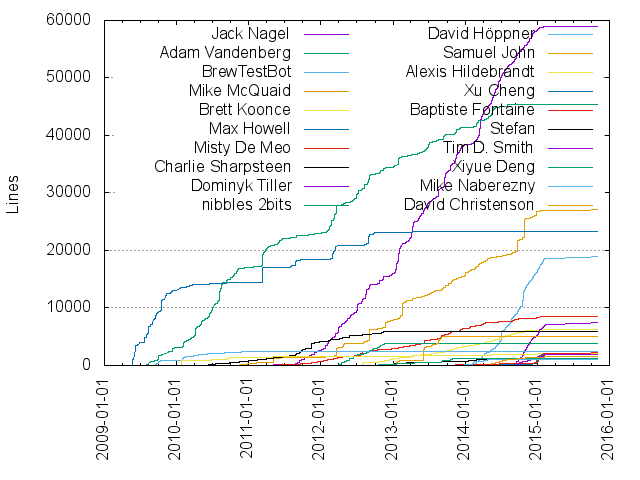
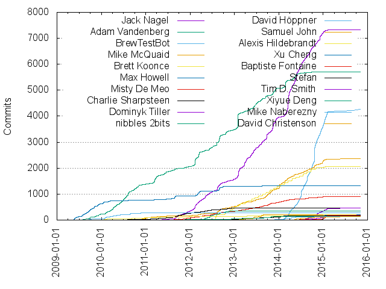

Authors
| Author | Commits (%) | + lines | - lines | First commit | Last commit | Age | Active days | # by commits |
|---|
| Jack Nagel | 7336 (17.19%) | 58994 | 59863 | 2011-04-13 | 2015-02-15 | 1403 days, 13:16:01 | 1053 | 1 |
| Adam Vandenberg | 5697 (13.35%) | 45406 | 41777 | 2009-07-27 | 2014-10-20 | 1911 days, 10:19:29 | 1145 | 2 |
| BrewTestBot | 4261 (9.98%) | 19009 | 8181 | 2013-10-31 | 2015-02-17 | 473 days, 11:18:05 | 387 | 3 |
| Mike McQuaid | 2362 (5.53%) | 27070 | 25742 | 2010-07-29 | 2015-02-17 | 1664 days, 11:08:19 | 620 | 4 |
| Brett Koonce | 2054 (4.81%) | 6208 | 7733 | 2011-12-18 | 2015-01-12 | 1120 days, 17:28:07 | 260 | 5 |
| Max Howell | 1317 (3.09%) | 23343 | 16172 | 2009-05-20 | 2013-09-21 | 1584 days, 20:35:55 | 300 | 6 |
| Misty De Meo | 902 (2.11%) | 8518 | 3374 | 2011-05-10 | 2015-02-16 | 1378 days, 1:52:23 | 508 | 7 |
| Charlie Sharpsteen | 474 (1.11%) | 5985 | 2368 | 2010-05-07 | 2014-04-29 | 1452 days, 15:22:38 | 230 | 8 |
| Dominyk Tiller | 471 (1.10%) | 7426 | 5608 | 2014-06-13 | 2015-02-17 | 248 days, 15:41:57 | 172 | 9 |
| nibbles 2bits | 351 (0.82%) | 3797 | 2085 | 2012-03-15 | 2012-11-20 | 249 days, 23:07:19 | 129 | 10 |
| David Höppner | 276 (0.65%) | 2374 | 443 | 2009-09-11 | 2011-02-16 | 522 days, 22:18:23 | 97 | 11 |
| Samuel John | 217 (0.51%) | 5026 | 4811 | 2011-04-14 | 2014-04-06 | 1087 days, 21:29:03 | 73 | 12 |
| Alexis Hildebrandt | 215 (0.50%) | 2151 | 800 | 2009-12-27 | 2015-02-13 | 1874 days, 10:20:07 | 91 | 13 |
| Xu Cheng | 204 (0.48%) | 2190 | 1080 | 2014-03-13 | 2015-11-02 | 598 days, 22:48:52 | 59 | 14 |
| Baptiste Fontaine | 193 (0.45%) | 2208 | 1176 | 2013-07-31 | 2015-02-16 | 564 days, 12:52:52 | 58 | 15 |
| Stefan | 164 (0.38%) | 1038 | 675 | 2012-11-08 | 2014-11-10 | 732 days, 4:10:09 | 85 | 16 |
| Tim D. Smith | 143 (0.34%) | 1899 | 771 | 2014-07-02 | 2015-02-12 | 224 days, 20:46:54 | 68 | 17 |
| Xiyue Deng | 135 (0.32%) | 1273 | 934 | 2011-09-05 | 2014-03-21 | 928 days, 5:26:15 | 92 | 18 |
| Mike Naberezny | 131 (0.31%) | 1087 | 150 | 2013-10-14 | 2015-01-26 | 469 days, 4:01:39 | 54 | 19 |
| David Christenson | 131 (0.31%) | 1587 | 1481 | 2014-05-11 | 2015-02-16 | 280 days, 22:29:48 | 52 | 20 |
These didn't make it to the top: Birger J. Nordølum, asaph, David Holm, Mark A. Matienzo, Thijs Vermeir, Jaime Marquínez Ferrándiz, Justin Clift, Stian Eikeland, Nibbles 2bits, Martin Kühl, Kashif Rasul, Ian Lancaster, Sergey M․, Camillo Lugaresi, Peter Aronoff, Jannis Leidel, Trevor Wennblom, Erik Michaels-Ober, Francisco Souza, Christian Moritz, Shaun Jackman, samueljohn, Frank Celler, Tomasz Pajor, Aku Kotkavuo, Steffen Matthischke, Mike Arthur, Hongli Lai (Phusion), Ali Asad Lotia, Chongyu Zhu, Brandon Bennett, Tianyi Cui, Austin Seipp, chdiza, James Aitken, Etienne Laurin, Robert Shaw, Larry Shaffer, Douglas Creager, Todd Persen, yrammos, Tyler Brock, Mislav Marohnić, Carlos Borroto, Sven-S. Porst, Chad Catlett, Yoji SHIDARA, Joshua Peek, Joep Loijens, Anil Madhavapeddy, Andrew Marshall, Ted Pennings, Lars, Clemens Gruber, Alex Gaynor, José Valim, Shawn Jonnet, Sebastian Sdorra, Peter Eisentraut, Dan, seanjreilly, Stein Magnus Jodal, David Larson, Michael Dippery, Chris Hoffman, blogabe, Sebastian Staudt, Lee Hanxue, dinkypumpkin, Yamashita Yuu, Rui Pereira, Ruben Fonseca, Johnathan Conley, Curtis Hovey, Simon Sigurdhsson, Kevin Moore, cosmo0920, Michael Paquier, Kyle Fuller, Elliot Saba, Drew Hess, Chilledheart, Martin Kuehl, Luke Gallagher, Edward George, Ealden Esto E. Escanan, Andy Piper, elliottcable, Viktor Szakáts, Shannon Skipper, Sergey Avseyev, Kieran Pilkington, Dave Cottlehuber, Corey Quinn, Colin Hebert, Christian Höltje, Anthony Scotti, Josh Tilles, George Kulakowski, Berk D. Demir, Andre Arko, Adam Malcontenti-Wilson, adriancole, Mislav Marohnić, Ed Porras, Denis Denisov, Alessio Bogon, Tsukasa OMOTO, Robson Roberto Souza Peixoto, Pieter Nicolai, Marc Abramowitz, Lifepillar, Jan Berkel, Fernando Ortiz, Felix Bünemann, Ernie Hershey, Eloy Duran, David Coeurjolly, Ben Alpert, kbinani, Sorin Ionescu, Peter Powell, Oleg Oshmyan, Lee Packham, Justin Hileman, Juan Sebastian Casallas, David Gageot, Damien Pollet, Clinton R. Nixon, Alexander Barton, yanniks, Tobias Steinhoff, Steven Peters, Marc Qualie, Laurent Raufaste, Josa Gesell, Gergo Erdosi, Domingo Suarez Torres, Dane Springmeyer, Chris Kau, Arne Jørgensen, Anders F Bjorklund, moyogo, kashif, Yehor Lvivski, Will Ross, Ralph Giles, MinRK, Matthew L Daniel, Matt Blair, Lars Eggert, Krzysztof Urbaniak, Frizlab, Felix Schulze, Dave Rice, Anthony Ramine, Anatol Pomozov, Anand Buddhdev, Alexey Palazhchenko, mbcoguno, kmowery, Yasuharu NAKANO, Myles Borins, Markus Groß, Karel Minarik, John Harrison, Harald Fernengel, Eugene San (eugenesan), Enrico M. Crisostomo, royhodgman, denji, Wayne Graham, Rémi Prévost, Ryan Schlesinger, Michael Lapinsky, Markus Prinz, Mark Nunberg, Lin Jen-Shin, Kevin Ballard, Jan Lehnardt, HAYASHI Kentaro, Dave Goodell, Andrew Childs, kjedamzik, aas, Yan Zhou, Tuncer Ayaz, Tim Gray, Stefano Pigozzi, Mike Goodspeed, Lars Bilke, Jonas Pfenniger, Jiayong Ou, Houtan Bastani, Aria Stewart, Andy Li, Alex Burka, tokuhirom, richo, hydrajump, Wesley Bland, Trevor Powell, Tom von Schwerdtner, TingPing, Rich Manalang, René Moser, Pete Gadomski, Pete Deffendol, Paul Horn, Michael Ford, Matthew Lewinski, Libor Wagner, Lenny222, Justin de Vesine, Junegunn Choi, Hannu Hartikainen, George Gastaldi, Feng Honglin, Dominique Orban, Chris Adams, Brian Smyth, Ash Berlin, fbrosson, dbr, Yue Liu, Ville Lautanala, Tryn Mirell, Travis Cline, Torsten Curdt, Stefhen Hovland, Second Planet, Samuel Cochran, Rob Hoelz, Pierre Riteau, Peter Neubauer, Paul Ingles, Mike Tigas, Michka Popoff, Martin Gondermann, Martin Funk, Marcus Vinicius Ferreira, Larry Gilbert, Kyle Marek-Spartz, Keisuke Kawahara, Joseph Richardson, Jonathan Wright, Jonathan Schleifer, J. Brandt Buckley, Homebrew, Gregory Pakosz, Gerrit Beine, Edward Samson, Devin Weaver, David Aguilar, Dan Walters, Ches Martin, Alexander Bayandin, Alex Regueiro, Yacin Nadji, Tobias Brunner, Sudish Joseph, Stuart Carnie, Sascha Kratky, Ryan Shaw, Rajiv Aaron Manglani, Paul Fitzpatrick, Mcklaren, Max Riveiro, Matt Sicker, Marv Cool, Martin Seeler, Luke Amdor, Leo Franchi, Kazuhiro Sera, Jørgen P. Tjernø, Julien Blanchard, Joseph C, Jonathon Klobucar, Jonathan Beezley, John Shahid, John Earles, Guillaume Hain, Geoff Nixon, Florian Sowade, David Reynolds, David Albert, Dave Crossland, Danny Casady, Clint Shryock, Christian Köstlin, Carl Moden, Caleb Land, Bryce Chidester, Boris Gordon, Ben Swift, Ben Blackburne, Austin Ziegler, Arlo Breault, Alexey Zakhlestin, skim, Tojek Anselm, Steven Sartorius, Simon Olofsson, Severin Smith, Ryan Pavlik, Robert Lenhardt, Piotr Usewicz, Peter van der Does, Paul Phillips, Nibbles McGurk, Nat Welch, Marnen Laibow-Koser, Lucas Clemente, Lance Parsons, Kenneth Reitz, José Martínez, Josh Hagins, Jon Buffington, John Claus, John Benediktsson, Jens Erat, Jake Bell, Ilya Kulakov, Hong Xu, George Macon, Gaëtan Lehmann, Dougal Sutherland, Dominic Evans, Diwaker Gupta, Dennis Luxen, Dennis Krupenik, David M. Lee, Daniel Trebbien, Cyril Scetbon, Caius Durling, Brett Porter, Brett Hoerner, Brad Beyenhof, Brad Ackerman, Bertrand Marron, Ben Hagen, Andrew Nesbitt, Alexander Solovyov, Alex Dunn, Adrian Petrescu, ywjno, vpmedia, take_cheeze, ojab, mystix, makigumo, lukas, linuxgeek247, arlolra, Zhang Yi, Xin Sun, William Woodall, Will Robertson, Wei Dai, Timothée Peignier, Timothée Peignier, Tim Heckman, Simon Lundström, Seth Ladd, Seth Falcon, Sean Lynch, Robson Peixoto, Renaud (Nel) Morvan, Pavel Borzenkov, Nicholas Sivo, Nguyen Anh Quynh, Michele Damiano Torelli, Matthew Callis, Matt Swain, Matt Barnett, Mathias Bynens, Martin Wilhelmi, Marco Ceppi, Lasse Bang Mikkelsen, Kyungdahm Yun, Kim Burgestrand, Kieran Ramos, Kazuki YAMAMOTO, Juhani Simola, Jorge Luis Mendez, Jordan Bracco, Jonathan Ragan-Kelley, Jonathan Boyett, Joe Baldino, Jay Soffian, Hiroshi Hatake, Hiroaki Nakamura, Harel Ben-Attia, Gavin M. Roy, Gary V. Vaughan, Gaëtan Lehmann, Ferdinand Niedermann, Emmanuel Blot, Eli Bishop, Dimitri Krassovski, Colin Dean, Cliff Rowley, Chris Wanstrath, Brian Jensen, Bradley M. Froehle, Benjamin Weber, Benjamin Fleischer, Bastien Dejean, Bartosz Romanowski, Attila Györffy, Andy Shinn, Andrew Kraut, Andrew Ayer, Alex Morega, Aku, teenst, oncletom, bkonkle, Yann Hodique, William Ting, Walter McGinnis, Ventero, Tomoki Aonuma, Tobias Lidskog, Thomas Bouve, Terin Stock, Sven Axelsson, Susan Potter, Steven Yi, Steve Erhart, Simon Menke, Sebastian Cohnen, SHIBATA Hiroshi, Russ, Ronny Haryanto, Robert Iannucci, Rob Warner, Richard Osborn, Richard Hurt, Rich Healey, Ricardo Franco, PoTe, Paul J. Davis, Oleksii Taran, Nathaniel Talbott, Nathan Toone, Michael Wild, Michael S. Klishin, Michael Klishin, Michael Hale, Max Horvath, Matthias Vallentin, Matt Whiteley, Matt Robenolt, Matt Reiferson, Matt Passell, Martin Czygan, Mark Shropshire, Lukas Stabe, Lukas, Liam Staskawicz, Krzysztof Wilczynski, Kevin Lyda, Kevin Faustino, Justin Spahr-Summers, Justin Balthrop, Julien Ponge, Joey Geiger, Joe Shaw, Jason Sallis, Jason A. Donenfeld, Jakub Stasiak, Jacob Howard, Hunter Morris, Hector Zhao, Gray Manley, Gerolf Seitz, Gerd Behrmann, George Bashi, Geoff Cant, Gabe Berke-Williams, Francisco Facioni, Eugeny Klementev, Dominik Moritz, Dmitriy Kopylenko, David Turnbull, David M. Carr, David Conrad, Darin Morrison, Daniel Holtmann-Rice, Daniel Berjón, Cristobal Dabed, Craig Rodrigues, Christopher Eby, Christian Rigdon, Charles Karney, Bruno Santos, Brian Waldon, Brett Cannon, Bob Fanger, Björn B. Brandenburg, Ben Bleything, Andrew Dunning, Andreas Fuchs, Amir Chaudhry, Alejandro Giacometti, Aaron Jacobs, zimbatm, tstevens, theunraveler, rhysd, phySi0, ngouzy, mirabilos, mike@arpaia.co, julienXX, jgeiger, iggyvolz, guns, eregon, dalguji, conscell, chexov, aaronlake, Zifei Tong, Yurii Rashkovskii, Yousef Ourabi, William Woodruff, Wil Moore III, Wael M. Nasreddine, Vladimir Andrijevik, Valerii Hiora, Tokuhiro Matsuno, Tobias Schwab, Tino Wagner, Theo, Tareq A Khandaker, Takumi IINO, Steven Harman, Stephane Epardaud, Shiloh Heurich, Sergejs Kovrovs, Sebastian Wyder, Sean Wolfe, Sean Channel, Ryo Okamoto, Ryan Davis, Rustam Zagirov, Rob Gabaree, Rico Sta. Cruz, Redmar Kerkhoff, Ray Slakinski, Peter Meuel, Peter Kristensen, Pavel Puchkin, Patrik Ragnarsson, Osman Üngür, Ori Livneh, Ondřej Surý, Nikolaus Wittenstein, Nicolas Perriault, Nicolas Despres, Nick Stenning, Mike Danko, Michael Hanson, Michael Erb, Matthew Vincent, Mathias Meyer, Martin Lau, Martin Hellmich, Markus Hubig, Mark Sonnabaum, Marcel Koeppen, Marc Simpson, Manpreet Singh, Makoto Sasaki, Machiste Quintana, Luke Petre, Lorenzo Manacorda, Linus Unnebäck, Lance Hepler, Kieren Eaton, Kevin M. Dulzo, Keith Fitzgerald, Keenan Brock, Katherine Whitlock, Julien Feltesse, Julien Ammous, Julian Stahnke, Joshua B. Griffith, Jonathan Wilkins, Jonathan Palardy, Jonathan Groß, John Cupitt, Job Snijders, Jin Yi, Jean-Michel Lacroix, Jasper Lievisse Adriaanse, Jason P. Scharf, Jan Stępień, Jamie Macey, Ismail Badawi, Humza, Hiroyuki Iwatsuki, Geoff Greer, Gavin Heavyside, Gasol Wu, Frank Denis, Francesco Banconi, Federico Bond, Fabian Freyer, Evgeny Mandrikov, Erik Kastner, Dustin Kirkland, Drew Stephens, Doug Goldstein, Dominik Gruber, Dmitry Nedospasov, Dipen Lad, Diego Zamboni, David Wales, David Sanson, David Ma, Dave Bayer, Daniel Lee Harple, Cory, Christoffer Lund, Christian Legnitto, Chris Koenig, CharlieRoot, Brian Candler, Booboule, Bo Xiao, Björn Albers, Bernhard Valenti, Ben Hale, Balint Reczey, Andy Freeland, Andrey Chizh, Andrew Janke, Alfred E. Heggestad, Alexander Surma, Alexander Pakulov, Alexander Kirillov, Alessandro Tagliapietra, Aleh Suprunovich, Albert Volkman, Adam Stankiewicz, Adam Rudd, Adam Lickel, Aaron Suggs, yury, youpy, uyjulian, tizoc, theirix, shansen, rick, ptrv, n0ts, mather, jtimberman, hryk, howthebodyworks, havenwood, dickeyxxx, david.hkc, chorn, bellbind, bchatard, balr0g, achiu, Zigmund Ozea, Zhiming Wang, Yago Riveiro, Xavier Lacoste, William Roe, Willem Deconinck, Welton Rodrigo, Vincent Bernat, Vincent, Victor Castell, Victor Baca, Turadg Aleahmad, Trevor Turk, Tony Cebzanov, Tom Taylor, Todd Wright, Tobias Stehle, Tobias Roeser, Timothy Sutton, Tim Dysinger, Thomas Strathmann, Thomas Gustafsson, Tamas Nepusz, Steven Merrill, Steve Losh, Stefan Pfenninger, Simon Whitaker, Silas Sewell, Sid Karunaratne, Sergey Lukjanov, Sebastian Roth, Sean O'Neil, Sean Brandt, Scott Wheeler, Scott Reeves, Ryan Senkbeil, Rodd Zurcher, Robin Ramael, Robert Newson, Rob Olson, Rick Fletcher, Reid Burke, Ragi Yaser Burhum, Pierre Carrier, Philipp Fehre, Philip Weaver, Peter Jaros, Pedro Araujo, Patrick Li, Nyx0uf, Nikolaus Demmel, Nick Silkey, Nick James, Nicholas Hutchinson, Neel Goyal, Mirek Rusin, Mihai Anca, Michel Steuwer, Michael Weisman, Michael Shapiro, Michael Morgan, Michael J. Schultz, Michael Hood, MerelyAPseudonym, Matti Schneider, Matthew Price, Matt Dickoff, Mateusz Gajewski, Martin Schurig, Martin Delille, Martial, Markus Heberling, Mark Janssen, Mark Cornick, Marc, MHC12, Luis Felipe Strano Moraes, Lucas Torri, Loren Siebert, Liang Qi, Lauri Oherd, Kyle Gorman, Kosuke Asami, Kevin Williams, Kevin Sołtysiak, Kevin Locke, Kenji Rikitake, Kendall Park, Keith Schulze, Karsten Sperling, Kaiwen Xu, Justin Weiss, Justin Mayer, Justin Azoff, Julian Berman, Joshua Priddle, Jonathan Dahan, Jon Chen, Jon Brisbin, Joey Korkames, João, Jesse Storimer, Jeremy Whitlock, Jeong Mok Cho, Jens H. Nielsen, Jens Cornelis, Jelle Schühmacher, Jeffrey Hardy, Jeffrey 'jf' Lim, Jeff Larson, Jason Whittle, Jason Terk, Jason Masker, Jason Baker, Jannes Jeising, James Whitehead II, James Abley, Jake Good, Jaehoon You, Jaeho Shin, Jacob Jewell, Jacob Appelbaum, JR Boyens, Ian Van Ness, Ian Plosker, Huahang Liu, Howard Butler, Hiram Chirino, Guo Xiao, Grzegorz Dzięgielewski, Gordon Tillman, Glenn Rempe, Geoffrey Oxberry, Fredrik Forsmo, Fred Potter, François-Xavier Thomas, Filippo Valsorda, Felix Kling, Farooq Mela, Faisal N. Jawdat, Fabio Utzig, Evan Shelhamer, Evan Oxfeld, Eric Radman, Eric Davis, Enderson Maia, Elad Gariany, Ed Robinson, Ed Marshall, Dustin Lang, Drew Wells, Drew Fisher, Doug Fritz, Doug Burke, Dmitry Kalinkin, Dennis Martinez, Deniss Afonin, Denis Barushev, Denis, David Peek, David James, David Goodlad, David Caldwell, David Baumgold, Danilo Tuler, Daniel Schauenberg, Daniel Russel, Daniel Luz, Daniel Geske, Dan Sully, Dan Larkin, Damir Vandic, Crazor, Cory T. Cornelius, Cody Boisclair, Christopher Bowns, Christoph Bünte, Chris Thachuk, Chris Rose, Chris Kampmeier, Chris Griego, Chris Cosby, Chris Ballinger, Chad Remesch, Carsten Blüm, Carlos Chacin, Carl Hörberg, Can Berk Güder, Can Berk Güder, Caleb Xu, Bulat Shakirzyanov, Bryan Ivory, Blake Smith, Bjarte Johansen, Bert JW Regeer, Bernhard Miklautz, Ben Burkert, Bart Leusink, Barry Allard, BEN ENGLISCH, Augie Fackler, Arnaud Lafon, Aric Coady, Anton Rieder, Anton P. Linevich, Anthony Pearson, Ankit Solanki, Angel Pizarro, Andy Christianson, Amos Wenger, Alexey Ivanov, Alexander Bohn / FI$H2k, Alexander Altman, Aleksandar Topuzovic, Adam Kunicki, Étienne Barrié, xiongchiamiov, wkruse, u0hun, turadg, tungolcraft, thalamus, spahl, soul916, sliver, sinzui, shazron, rentzsch, phinze, papaeye, onewheelskyward, mxcl, mindrones, miku, malcolmhumphreys, luzpaz, larsmoil, lacre, kurayama, kkung, kax4, john muhl, jenkins, jctull, include, ichizok, hacfi, glaszig, dx7, droid-Q, codingisacopingstrategy, burningTyger, brada, atr000, archstar, antbryan, Zearin, Zack Kitzmiller, Zach Moazeni, Zac Stewart, Yuval Adam, YuK_Ota, Yoji Shidara, Yishen Miao, Yann-R, Xidorn Quan, William Lynch, Will Tisdale, Will Sargent, Wez Furlong, Wes Baker, Vítor Galvão, Vladimir Burdukov, Vincent Landgraf, Vincent Driessen, Vincent Beffara, Victor Trac, Ulrik Landberg Stephansen, Ullrich Schäfer, Tzu-ping Chung, Tyler Davis, Tuk Bredsdorff, Troels Thomsen, Trey Hyde, Trevor Stevens, Tony Sokhon, Tony Sloane, Tony Beckham, Tomas Carnecky, Tom Ward, Tom Hughes, Ting-Yu Lin, Timo Sand, Tim Shadel, Thomas Schreiber, Thomas Parisot, Thomas Kim Pham, Thomas Børlum, Thierry Moisan, Teo Ljungberg, Tamas, Takenori KUBO, Sérgio Lopes, Sébastien Gross, Swaroop C H, Sun Liwen, Stoned Elipot, Steven Lumos, Steven Kallstrom, Steven Hahn, Steve Agalloco, Stephen Haynes, Stephen Eglen, Stephen Caudill, Stephen Bannasch, Steffen Hausmann, Stefan Schüßler, Stefan Huber, Stefan Glase, Squeeks, Simon Head, Simon COURTOIS, Sigurd Høgsbro, Sietse de Kaper, Sidney Markowitz, Shazron Abdullah, Semyon Perepelitsa, Sean Reilly, Sean Goller, Sean Fleming, Scott Roberts, Scott Kyle, Schulze Thomas, Saket Choudhary, Ryunosuke SATO, Ryan Wang, Ryan Hendrickson, Ryan Baumann, Ryan Barnard, Rune Botten, Roy Shilkrot, Ross Singer, Rory O’Kane, Romain Lespinasse, Rogério Brito, Rogerio Prado de Jesus, Roger Jungemann, Rodrigo Chacon, Robert Quattlebaum, Robert Gieseke, Robert Flick, Rob Hunter, Rob Cowie, Rike-Benjamin Schuppner, Richo Healey, Richard West, Ricardo Martins, Reuben Morais, Remko Tronçon, Raphael Cohn, Ralf Stephan, Preston Marshall, Philip Paeps, Pedro Borges, Paul Mucur, Paul Hammond, Paul Bergeron, Paul Annesley, Patrick McLaughlin, Pascal Bertrand, Parker Moore, Otto Bretz, Osman Üngür, Olivier Lauzon, Oliver Schrenk, Oame, Nils Fenner, Nils Caspar, Nicolas Pinto, Nicholas Robison, Nicholas J Humfrey, Nathan de Vries, Miëtek Bak, Mikkel Krautz, Mike Lapinsky, Mike Enriquez, Mike Clarke, Miikka Koskinen, Michiaki Ariga, Michail Pishchagin, Michael Stephens, Michael Mior, Michael Joseph, Michael Blakeley, Michael Bashkirov, Michael, Maurus Cuelenaere, Matthew Scott, Matthew Rudy Jacobs, Matthew Jones, Matthew Caruana Galizia, Matt Torok, Matt Stevens, Matt Kemp, Matias Korhonen, Mat Gadd, Martin Williams, Martin Probst, Martin Mauch, Martin Gruner, Marshall Levin, Mark L. Chang, Mark Imbriaco, Mario Uher, Luke Chadwick, Luigi Pinca, Lucas Hoffmann, Lincoln Stoll, Leonid Mokrushin, Leonard van Driel, Leon Zhang, Lenz Gschwendtner, Larry Hynes, Kyle VanderBeek, Kyle Harrigan, Kris Williams, KnackeredCoder, Kazuhiro NISHIYAMA, Kalin Harvey, Justin Pitts, Justin Joy, Justin Grevich, Justin Downing, Julien Duponchelle, Julien BLANCHARD, Juan C. Müller, Joshua Rutherford, Josh Wisenbaker, Josh Pschorr, Joseph Yølk Chiocchi, Jose Santos, Jose Diaz-Gonzalez, Jordi Gutiérrez Hermoso, Jordi Bunster, Jonathan Abourbih, Jon Morehouse, Jon Ege Ronnenberg, Jon Buckley, John Wiegley, Johannes Weißl, Johannes Schönberger, Johan Oskarsson, Joel Chippindale, Joe Block, Jocelyn Mallon, Jim Myhrberg, Jiang Xin, Jiahao Chen, Jez Ng, JessThrysoee, Jeremy Larkin, Jeffrey Carpenter, Jeff Putsch, Jeff Hann, Jason L. Shiffer, Jason Gessner, Jari Bakken, Jared Townsley, Janusz Harkot, Jan de Muijnck-Hughes, James Wheare, James Snyder, James Dumay, James Conroy-Finn, James Campos, James Brown, Jakob Schlyter, Jacob Harris, Jack Morrison, JD Harrington, J. Brisbin, Ingmar Vanhassel, Indrajit Raychaudhuri, Ilmari Vacklin, Horst Gutmann, Hideki IGARASHI, Hermiod, Guyzmo, Guy Rozendorn, Guillermo Iguaran, Greg Sieranski, Grayson Manley, Gildas Cuisinier, Gijs Molenaar, Gerald Combs, Geoff Reedy, Garrett Hyde, Gabe Levi, G Coco, Fred Wenzel, François Garillot, Florian Bruhin, Finn Smith, Felix Rotthowe, Felix Itzenplitz, Fedor Bezrukov, Erwann Mest, Erik Weinmaster, Eric J. Duran, Eric Himmelreich, Eric Butler, Ephemera, Emanuel Evans, Eloy Durán, Elmak, Elliot Murphy, Eashwar Ranganathan, Dzhelil Rufat, Duncan Mak, Dossy Shiobara, Dimitar Nedev, Devon Stewart, Deniz Türkoglu, Denis Sukhonin, Denis Bardadym, David Wooldridge (z0mbix), David Li, David Kreitschmann, David Czarnecki, David Cox, David Björklund, David Backeus, Dave Lee, Daniel Tang, Daniel Sloof, Daniel Schobel, Daniel Salber, Daniel Rothmaler, Daniel Rodríguez Troitiño, Daniel Martín, Daniel De Aguiar, Dane Jensen, Dan Poggi, Dan Palmer, Dan Loewenherz, Dan Knoepfle, DJManas, D1plo1d, Corey Donohoe, Coda Hale, Clemens, Christopher Sexton, Christopher Denter, Christoph Sturm, Christian Romney, Christian Mayer, Christian Köstlin, Christian Höltje, Christian Hofstaedtler, Christer Solskogen, Chris Rebert, Chris Lucas, Chris Ledet, Chen, Xiaoqiang, Charlie Allom, Chandler Latour, Carmine Paolino, Calvin Loncaric, Bryce Mecum, Bruno Sutic, Bruno R. Barreyra, Brock Batsell, Brian Gyss, Brian Gernhardt, Brent Fitzgerald, Bradley Bell, Blake Watters, Berry Phillips, Benjamin Kramer, Benjamin Cremer, Benedikt Arnold, Ben Olive, Ben Lovett, Bas Kok, BYVoid, Austin G. Davis-Richardson, August Lilleaas, Arun Agrawal, Arthur Kalmenson, Arinto Murdopo, Archimedes Trajano, Ant Bryan, Andy Fowler, Andrey Smirnov, Andrew White, Andrew Kane, Andrew Erickson, Andrew Bennett, Andrew, Andrei Polushin, Andreas Pfohl, Andreas Lappe, Andreas Creten, Anders Bergh, Ali Sabil, Alexey, Alexandre Gramfort, Alexandre Espinosa Menor, Alexander Graefe, Alexander Courtis, Alex-P. Natsios, Alex Payne, Aleksander Modzelewski, Alan Pearce, Alan LaMielle, Adeel Ahmad Khan, Adam Guthrie, Adam Durity, Adam C. Foltzer, Abdul-Jabbar Shalabi, Aaron Ecay, 鲁痴, 魏涛, 謝致邦, 响马, Евгений Степанищев, Øyvind Ingebrigtsen Øvergaard, xuwei-k, xaizek, wsxiaoys, vemacs, uasi, toothrot, tlk, timothykang, tduehr, taskwarrior, syntaxerrormmm, swdyh, squircle, smiledawgg, slhck, skycaptain, singe, sillage, shelling, sergey, seph, seb, sean, saskathex, saltspork, sacsar, s3+dev@sdfeu.org, rogeriopvl, quarnster, pushmatrix, prateekbaheti, pmeinhardt, patricks, pascalbertrand, palxex, okuoku, nulltask, nmeans, nicholas harteau, nathanbowser, myfreeweb, msergeyy, mschueler, mkroehnert, mhemeryck, medina, mcornejo, mccraig mccraig of the clan mccraig, markusn, marcindulak, manboubird, mainyaa, liesen, lhoBas, lalyos, ladislas, kronicd, kret, knarz, kewagi, jvdp, jsks, jnothman, jiayong.ou, jfarrell, isaacs, irh, henningkessler, hachidorii, h-q, ggironda, gcoco, futoase, fuJiin, francesco-romano, elij, dstnbrkr, dpwrussell, doppler, dbrown, codec, co-me, cmar, ckenna, ckdaas, bmehaffey, blob8108, bimmel1231, austin seipp, andrew morton, ambs, alexrp, akafred, ahihi, aereal, adnissen, Zigang Xiao, Zeh Rizzatti, Zak Johnson, Zaheer Abbas Merali, Zack Hobson, Zachary Waldowski, Zach Pomerantz, Zach Holman, Zac Lee, Yusuke Miyazaki, Yuri Artemev, Yuki Ito, YoungTaek Oh, Yohann Bianchi, Yogesh Girdhar, Yannick Reifschneider, Winston Weinert, William Riley-Land, William Ono, Will Cosgrove, Will Boyce, Wes Oldenbeuving, Wes Morgan, Werner Robitza, Wade Simmons, Volker Fritzsch, Vitaliy Gladkevitch, Ville Korhonen, Viktor Szakats, Vikhyat Korrapati, Vidar Gundersen, Victor Luft, Victor Costan, Vasily Korytov, Vaduz, Uri Laserson, Ungureanu Marius, Trym Skaar, Trevor Muñoz, Travis Warlick, Travis Johnson, Travis Jeffery, Topher Cyll, Tony Garnock-Jones, Toni Menzel, Tomy Hudson, Tomas Linhart, Tom MacWright, Tom Lieber, Tom Hoover, Todor Genov, Tobias Link, Tobias Birmili, Tin Htet Kyaw, Tim Visher, Tim Kersey, Tim Harper, Tim Felgentreff, Tim Douglas, Tim Bellefleur, Till Heistermann, Tijs Zwinkels - TinkerTank, Thomas Texier, Thomas Pham, Thomas Pani, Thomas Kupper, Thomas Jachmann, Thomas Ferris Nicolaisen, Thomas Cioppettini, Theo Wadsley, Tej Chajed, Taylor Mitchell, Tanner Lovelace, System Administrator, Study, Stuart Glenn, Stuart Eichert, Stig Brautaset, Steven Scott, Steven Oliver, Steven Luu, Steven Loria, Steven Degutis, Steve King, Steve K, Steve Hoeksema, Steve Gury, Stephen Touset, Stephan Zeissler, Stephan Seidt, Stefan Kersten, Sridhar Ratnakumar, Sixten Otto, Simonas Šerlinskas, Simon Rozet, Sijawusz Pur Rahnama, Shayne Sweeney, Shawn Walker, Shawn Morel, Shaun McDonald, Seth LaForge, Seth Fitzsimmons, Seth Chisamore, Sergey Tatarintsev, Sergey Karayev, Sebastian Wiesner, Sebastian Tramp, Sebastian Röder, Sebastian Rabuini, Sebastian Hegler, Sebastian Haas, Sebastian Daniel, Sebastian Albers, Sean Leather, Sean Cribbs, Sean Chen, Scott Christopher, Saul Shanabrook, Sander Bouwhuis, Sampumon, Sam Soffes, Sam Dengler, SHIDARA Yoji, Ryota Ozaki, Ryan Wilhm, Ryan Kee, Russ Garrett, Rufo Sanchez, Ruben Kerkhof, Roy Liu, Rowan Lewis, Ross Heflin, Ronaldo M. Ferraz, Ron Rosson, Rommel G Custodio, Roman Romanchuk, Rolf Timmermans, Roland Moriz, Rohan Singh, Roger Que, Roger Leigh, Robin Heggelund Hansen, Robin, Roberto Tyley, Roberto Nibali, Robert Tully, Robert Sanders, Robert Pitts, Robert Jackson, Robert Bousquet, Robert Blenkinsopp, Robby Grossman, Robbie Shade, Rob Rix, Rob Hudson, Rob Hanlon, Riobard, Rickard von Essen, Rich Hong, Rich Cheng, Ric Pruss, Randy Thiemann, Ralph Angenendt, Radek Simko, R.T. Lechow, Pieter Noordhuis, Pierce Lopez, Philippe Mongeau, Philippe Latulippe, Phil Smith, Petr Hosek, Peter Teichman, Peter Schneider, Peter Robinett, Peter Meilstrup, Peter Hellberg, Pete Yandell, Petar Radosevic, Pepijn de Vos, Pedro Vanzella, Pedro Mariano, Pavel Sakun, Pavel Penkov, Paul van der Walt, Paul Welch, Paul Wagland, Paul Sadauskas, Paul O'Neil, Paul Mulders, Paul Kmiec, Paul Howes, Paul Fertser, Paul Bartlett, Patrick Walton, Patrick Stadler, Patrick Huck, Patrick Elder, Oscar Rendon, Ondřej Surý, Olle Lundberg, Olivier ROUX, Oliver Tonnhofer, Oliver Hookins, Oliver Erxleben, Oldrich Smehlik, Olaf Alders, Nothing. N. Nobody, Noah Manneschmidt, Njal Karevoll, Nima Fatemi, Nikolay Kasyanov, Nikola Majksner, Nikhil Benesch, Niket Patel, Nikem, Nik Reiman, Nihad Abbasov, Nicolas Ojeda Bar, Nicolas De loof, Nicolas Crowell, Nicolas Braud-Santoni, Nick Zavaritsky, Nick Vandal, Nick Gravelyn, Nicholas Masso, Nicholas Harteau, Neville Kadwa, Nelson Tam, Nelson Darkwah Oppong, Neil, Ned Konz, Nax, Nathan Green, Nate Stedman, Nate Smith, Nate Drake, Nandor Kracser, Naitik Shah, Myers Carpenter, Moxie Dee, Motonori Iwata, Morton Jonuschat, Moritz Ulrich, Mithun Ayachit, Mitch Tishmack, Ming-Hsien Tsai, Mikko Lehtonen, Mike Skalnik, Mike Prentice, Mike Meyer, Mike Fiedler, Mikaela Suomalainen, Mikael Zayenz Lagerkvist, Mikael Lepistö, Miëtek Bak, Michiel Missotten, Michel Martens, Michal Svab, Michael Williams, Michael Weibel, Michael Wall, Michael Ummels, Michael T. Conigliaro, Michael S. Fischer, Michael Rogger, Michael Lai, Michael Kohl, Michael Johann, Michael J. Cohen, Michael Huynh, Michael H. Oshita, Michael Glass, Michael Garrett, Michael C. Grant, Michael Bravo, Michael Bradshaw, Michael Barton, Mel Gray, Mehdi Lahmam B, Maxime Nowak, Max Nordlund, Max Lapshin, Max Klinger, Matthias Kadenbach, Matthew R Becker, Matthew Hawkins, Matt Stump, Matt McClure, Matt Heitzenroder, Matt Furden, Matt Davis, Matt Chu, Matt Butcher, Matt Ball, Mathew Oakes, Mateusz Lenik, Masaki Muranaka, Marvin Scholz, Martin Jagusch, Martin Fitzpatrick, Martin Balfanz, Martijn Dashorst, Marshall Yount, Markus Klink, Markus Herb, Markus Felten, Markus Cisler, Mark Simpson, Mark Lewandowski, Mark A. Miller, Mario Mueller, Marek Sebera, Marco Wise, Marcello Barnaba, Marcel Wolf, Marc Schwieterman, Luke Orland, Luke G, Lukas Sabota, Luc Heinrich, Lorin Rivers, Lorenz Meier, Loom, Lon Baker, Loic Nageleisen, Lionel Montrieux, Lincoln Baxter, III, Li Dong, Leonhardt Wille, Leo Kim, Leif Middelschulte, Lei Xu, Laurent Gaches, Laurent Cozic, Laurent Arnoud, Lars Tackmann, Lars Henrik Mai, LI Daobing, Kyungmin Lee, Kyle Kauffman, Kyle Fritz, Kristoffer, Kozo Nishida, Konstantin Shabanov, Konstantin Käfer, Konrad Rieck, Kolja Kube, Koen Van der Auwera, Klaus Meyer, Kerim Kaylan, Kenneth Vestergaard Schmidt, Kenneth Powers, Kenn Wilson, Ken Mankoff, Keisuke Takahashi, Katharine Berry, Karl Kuehn, Karan Lyons, Jérôme Andrieux, Justin Ridgewell, Justin Holmes, Justin Hart, Justin Donaldson, Justin Bradford, Julien Danjou, Juan Wajnerman, Juan Ignacio Laube, João Ventura, João Britto, Joshua Suggs, Joshua Stauter, Joshua Griffith, Joshua Bussdieker, Josh Goebel, José Martínez, Jose Peleteiro, Joris Vanhecke, Jonny Gerold, Jonathon L Duckworth, Jonathan Hitchcock, Jonathan Halcrow, Jonathan Chang, Jonathan Barronville, Jonathan 'Wolf' Rentzsch, Jon Roberts, Jon Kessler, Jon Gretar Borgthorsson, Johnneylee Jack Rollins, John Paul Ashenfelter, John Manoogian III, John Hewson, John Colvin, Johannes Wienke, Johan Pauwels, Johan Hammar, Johan Bergström, Joe Grund, Joe Auricchio, Joe, Joachim LeBlanc, Jingwen Owen Ou, Jim Regan, Jim Radford, Jiawei Li, Jiang Jiang, Jesus Lopez, Jesse Tan, Jesse Newland, Jesse B. Hannah, Jeroen, Jeremy W. Sherman, Jeremy Gailor, Jeremy Carbaugh, Jeong, Heon, Jens Hedegaard Nielsen, Jelmer, Jellyfrog, Jeffrey T. Palmer, Jeffrey Stedfast, Jeff Mitchell, Jeff Clites, Jean-Philippe Ouellet, Jean-Christophe GAY, Jean Mertz, Jayson Reis, Jay Levitt, Jasper van Wanrooy, Jason Wells, Jason Voegele, Jason Morrison, Jason Huebsch, Jarrett Meyer, Jarkko Oranen, Jamie van Dyke, James Wald, James Strachan, James Mills, James Miller, James Laver, James G. Kim, James Clarke, Jakukyo Friel, Jakob van Santen, Jakob Rath, Jaik Dean, Jacob Hayes, Jacob Bandes-Storch, Jacek Migdal, J.Paul Rinehimer, Izzat Mukhanov, Ivan Storck, Ivan Krechetov, Isao Yagi, Ionuț G. Stan, Ingo Richter, Ildar Karimov, Igor Mozharovsky, Ian Langworth ☠, Ian Hill, Ian Gallagher, Ian Gable, Ian, Hugo Ferreira, Hitesh Sondhi, Hector Castro, Havanna, Hasan Veldstra, Hans Huebner, Hannes Mühleisen, Hamuko, Hampton Catlin, Halvard Skogsrud, Haden Pike, Göran Gustafsson, Guillermo Garza, Guido Lorenz, Guan Yang, Gregory Petrosyan, Gregory Man, Gregor Jasny, Gregg Lind, Greg Turnquist, Greg Karékinian, Grant Ellis, Graham Hughes, Graeme Hamilton, Govinda Fichtner, Giulio Eulisse, Giovanni Bajo, Gilles Cornu, Gianfranco Palumbo, Gert Van Gool, Gerard Lledo, Gerald Kaszuba, George Song, Geoffrey Huntley, Garrett Barboza, Gabor Ratky, Frederick Akalin, Freddy Roman, Fred Oliveira, Fred Klassen, François Beausoleil, Franz Bettag, Frank Schoenmann, Frank DENIS, Francisco J, Francesco Mosca, Fotos Georgiadis, Florian Zwoch, Florian Leitner, Filip Gospodinov, Fernando Mut, Fergal Hainey, Fabian Jakobs, Fabian Hassler, Evan Grim, Eungju PARK, Eugene Ray, Ernesto Rico-Schmidt, Erlend Hamberg, Erik Kallen, Erik Abele, Erich Kist, Eric Schrijver, Eric Drechsel, Eric Bailey, Eero Saynatkari, Edward Muller, Eduardo Bart, Eduard Baun, Eddie Zaneski, Dylan Smith, DusK, Duncan Grazier, Duckki Oe, Drew Waranis, Doğan Çeçen, Douglas Soares de Andrade, Douglas F Shearer, Douglas Campos, Donald Stufft, Dominik Tobschall, Dominik, Dmitry Wolf, Dmitry Shaposhnik, Dmitry Plashchynski, Diogo Ramos, Diego de Estrada, DevMan, Decklin Foster, Dean Smith, Dean Morin, David Xia, David Taylor, David Stoline, David Nadlinger, David Kinzer, David Kendal, David Höppner, David Hall, David Edmondson, David Celis, Darren Huang, Danny Beard, Daniele Torelli, Daniele Sluijters, Daniel Walmsley, Daniel Szmulewicz, Daniel Slapman, Daniel Serodio, Daniel Peebles, Daniel Cousineau, Daniel Bovensiepen, Daniel Bingham, Dan Weeks, Dan Peterson, Dan Martinez, Dan Lipsitt, Dan Hughes, Dan Frankowski, Damon McCormick & Cameron Walters, Damjan Marion, Dale Ackerman, Daisuke Murase, Daisuke Maki, Cyril Lashkevich, Conrad Irwin, Cody Soyland, Cody Maggard, Clayton Wheeler, Clay McClure, Christopher Kolstad, Christian Rishøj, Christian Inzinger, Christian Eager, Chris Winslett, Chris Wilkes, Chris Smola, Chris Schneider, Chris Molozian, Chris Jones, Chris Beer, Chris Atwood, Chris, Chloe Stars, Cheah Chu Yeow, Charles H. Leggett, Charles Brossollet, Carsten Bormann, Carlo Cabanilla, Carbo Kuo, Can Duruk, Cameron Walters, Cameron Ring, Calle Dybedahl, Caleb Tennis, Caio Henrique de Queiroz Katayama, Bryce M, Bryan Peterson, Brien Colwell, Brice Dutheil, Brian Underwood, Brian Palmer, Brian Martin, Brian Devins, Brian Celenza, Brian Buchanan, Bret Comnes, Brennon York, Brendan Loudermilk, Branko Čibej, Brandon Siegel, Brandon R. Stoner, Brandon Bloom, Brandon Black, Braden, Brad Crittenden, Bodaniel Jeanes, Bobby Burden, Bjørn Arild Mæland, Björn Albers, Bill Welliver, Benny Wong, Bennett Blodinger, Benjamin Stiglitz, Benjamin Maus, Benjamin Fritsch, Benjamin Dobell, Beng Hee Eu, Benedikt Scholtes, Ben Willmore, Ben Mabey, Ben Livingood, Ben Hu, Ben Cochran, Ben Bass, Ben Alkov, Bas Vodde, Baruch Sadogursky, Bartosz, Bart Vandendriessche, Bart Janssen, Austin Riendeau, Aubin Paul, Astellar, Ask Solem, Asger Hautop Drewsen, Arun Bhalla, Artur Petrov, Arthur Liu, Arnoud Vermeer, Aris Adamantiadis, April Arcus, Anvar Karimson, Antonio Zanardo, Anthony Grimes, Anthony DeStefano, Andy Jackson, Andy Blyler, Andrey Popp, Andrey Antipov, Andrew de Andrade, Andrew Wellington, Andrew Tian, Andrew Sharpe, Andrew Schwartzmeyer, Andrew Neitsch, Andrew J. Erickson, Andrew Ellis, Andrew C. Morrow, Andrei Neculau, Andreas Teichrib, Andreas Neuhaus, Andreas Löf, Andreas Behr, Andrea Francia, Andrea Bedini, Anderson Vaz, Anatoly Mikhailov, Allen Huang, Allan Odgaard, Alkesh Vaghmaria, Alexey Muranov, Alexey Matveichev, Alexej Kubarev, Alexander Saltanov, Alexander Kahn, Alexander Greim, Alexander Færøy, Alexander Corrado, Alex Samorukov, Alex Rea, Alex Malinovich, Alex Ernst, Alessio Caiazza, Aleksandar Simic, Alec Thomas, Alan Harper, Alan Dipert, Alan Boudreault, Alan Antonuk, Akshay Hegde, AgBorkowski, Adrien Cahen, Adrian Rego, Adomas Paltanavičius, Adam Vaughan, Adam Radabaugh, Adam Getchell, Adam Coffman, Adam, Abhi Yerra, Abhay Kumar, Aaron Simmons, Aaron Patterson, Aaron Huslage, 0xd34df00d, (@ivanvc), 지현준, 桑畑 英資, 影月 零, Žilvinas Valinskas, zzzhc, zhangcheng-aa, zepag, zchee, zardra, zachheine, yvan vander sanden, ykichanov, yiyuanlu, ydnar, yasuyk, yachris, y_uuki, xxxajk, xiaobo, xdite, x0l, wrb, wolfgangasdf, wmlex, wizsilex, winklerand, where's the fire?, waymost, watsonian, waltari, vguerci, unsymbol, unaib, ujihisa, tvon, ttjsmits, tschundeee, tonyskn, toki, toggtc, tobzsc, tirekicker, tinogomes, timdoug, tim, thoso, tfeith, tesseract2048, tepsl, tell-k, tehabe, tamird, takahi-i, taiansu, t.pickett66, szymonsobczak, syndicut, sveolon, suvash, sunteya, sunnz, suisho, suguru, sugimoto, stib, stevenppp, stephen, stefanschmidt, stefan.kral, statique, spicyj, sowawa ( Keisuke SOGAWA ), sowawa, soh335, softboysxp, snowXman, smaftoul, slushpupie, skyisle, skinny_much, silasb, sibsibsib, siadat, shreddd, shikil, shaharz, sergiokas, sedroc, seano and Matt Gauger, scottsuch, scoates, sarahkeefe, sanemat, sand, samuel tonini, sakkaku, saitoha, saintgermain, ryo katsuma, ryanrms, ry@misprint.org, rstata-verticloud, rofl0r, robertomon, rlotun, rl-0x0, risk, ridiculousfish, remiprev, red, razasyedh, razamatan, ralph, raja, rafaeldx7, quaa, psoaresgit, protomouse, preek, pote, porcupo, poppen, pjaspers, piti, phstudy, phracker, phillc, philips.luke, philip, pencilcheck, pencil, pedro, paulinder@gmail.com, patrick, pablo flouret, p0ns, ovarene, othree, orbital-fox, ono_matope, omissis, olovsundstrom, oleg dashevskii, okonomi, oinuma-kazuhiro, ochaochaocha3, ntalbs, nostahl, nonowarn, nonamed108, noe111, nilsonholger, nikwest, nihilistcat, nickl-, nhumrich, ngoyal, newzealandpaul, nervo, neersighted, ndr, narugami, narango, nanki, n0rmrx, mythosil, mus0u, mundfrem, mumhero, muddletoes, mt3, msmorgan, ms4py, mroach, mrickard, mrf, mrb, mp607, motammi, morou, mo-fu, mkotsur, mkassner, mithrandi@mithrandi.net, minusfive, miks, mikong, mikeydiamonds, mike-hearn, mike schueler, mdeletrain, mbravorus, maxlandborn, maxgalbu, max furman, mattonrails, matthew, mattetti, mattdennewitz, marqs, maqr, malev, malch, maggiolo00, madlep, m42i, m0t0k1ch1, m0rk, luozengbin, luckow, lucha, lucaderi, lsliwko, lorensr, locolupo, listrophy, limed, lim@chernjie.com, letorbi, leralle, lepht, leafy7382, lars, l4u, kynnjo, kylef, kuwahata.eisuke, kuperman, korthaerd, kofi, kkdd, kirneh1986, kimballfrank, kevinbin, kernelpaniclite, keith lloyd, kei, kawanet, karlll, kaolin fire, kaizoku, kaicurry, jw2013, jveitchmichaelis, jsanders, jquast, jphastings, josmo, jose.gonzalez, jon, johnlinvc, joewilliams, jocar, jmsunseri, jm2dev, jlaws, jjwmui, jiefoxi, jgreely, jeroen, jdonaldson, jbub, jbergstroem, jbastos, javallone, jathd, janv, jamesyc, jake, itsb, itsZero (Chien-An Cho), ioxenus, insomniacslk, inkytonik, indiecat, imccoy, ilovezfs, ijohn, igorette, ieee8023, idclark, iandol, iXô, http://jayferd.us/, hpoydar, hlin117, himikk, herrernst, heppstux, henarons, hebiyan, hazz, haron, harajune, hallucynogenyc, h416, h2000, gregpsycle, grecocd, gongqijian, godswearhats, gnu-user, glvnst, glejeune, gin0606, geistteufel, garrettreid, freeyoung, fpartridge, flow, flosch, figrrygg, fhesse, fhemberger, fermayo, fawlty, fawce, fal4, eru.tndl, erhudy, erase/rewind, ento, engeld, ender672, emerson, emc, elm, elCuervo, ehonlia, edwardsmit, edified@gmail.com, eatcpcks, ease79, ear, eah1@yahoo.com, dz0004455, dwihn0r, dtan4, dsx, dschobel, drrb, drm0hr, dlandau, dihernandez, dgwakeman, dgageot, dfaligertwood, dewey, desimone, dengzhp, deizel, deepsweet, deepblue, dduvnjak, dbart, darron froese, darron, dannenberg, daniels220, danielmartin, daniele, damienklinnert, d6rkaiz, cxx, cuchac, crx091081gb, complex, cola-zero, cocoatomo, clubphily, cloudhead, cleiby, circleb, chrisg, chrisdoc, chrisatkin, chosenken, chenmin201, cclauss, castor4bit, castFromVoidPtr, camparijet, calmriver, caf, cadrpear, c0nscience, buuck, buckket, bryan kennedy, brendanhowell, breadtk, boyeriis, booboule, bmurr, blatantlyspam, blacktop, bjosip, bjoernhaeuser, bitter, bios, billchurch, benoitc, benmills, benjaminweb, bendyworks, benderydt, benburton, bart, barberio, ayn, avaerya, autre, aus, at@an-ti.eu, asymmetric, asaka, arq5x, arolle, aristidesfl, ari, arbovm, antoinecomte, alf, alexshk, alexeyshockov, alexchandel, aku@hibana.net, aktowns, aimee daniells, aheuermann, afiser, adrianrego, adammck, aaronwolen, aaronchi, Zuyang Kou, Zsolt Tripolszky, Zsolt Takács, Zou Guangxian, Zhuang Ya, Zhong Jianxin (azuwis), Zhitong He, Zheng Shao, Zhao Cai, Zeno Amaro, Ze Jin, Zameer Manji, Zak \\\"Ubercow\\\" Kristjanson, Zachery Hostens, Zachary Voase, Zach Palchick, Zach Langley, Zac Clark, Zabolotnov Sergey, Yuxuan 'fishy' Wang, Yuumi Yoshida, Yutaka Tsutano, Yusuke Kawasaki, Yury Korolev, Yurii Samsoniuk, Yuri Khrustalev, Yuki Iwanaga, Yuichi TANIKAWA, Yueh-Hsuan Chiang, Yuefeng Leng, YoungHoon Rhiu, Yifei Zhou, Yida Zhang, Yegor Pomortsev, Yecheng Fu, Yaw Anokwa, Yasuyuki Oka, Yasuhiro Kunimoto, Yasuharu Nakano, Yarrow, Yaroslav Klymko, Yannik Ehlert, Yann N. Dauphin, Yann Coupin, Yaniv Aknin, Yamen, Yachi Lo, Y.Kentaro, Y. T. CHUNG, Xiao Li, Xiao G. Wu, XiNGRZ, Xavier Shay, Xavier Roche, Xavi Magrinyà, Wulfshade, Wout Mertens, Woody Gilk, Wolfgang Hommel, Wim Looman, William Poussier, William Melody, William Mayor, William Langford, William Entriken, William Bert, Willem Pinckaers, Will White, Will Orr, Will Norris, Will Langstroth, Will Jordan, Will Harris, Will Glynn, Will Farrington, Wil Tan, Wiktor Schmidt, Weston Nielson, Weston Jossey, Wessel Louwris, Wesley Mason, Wesley Hill, Wentao Han, Weiyin He, WebDesZ, Wannes Meert, Walter Smith, Walter Cacau, Waleed Khan, Vykook, Volker Stolz, Vladislav Bortnikov, Vladimír Kriška, Vladimir Timofeev, Vladimir Pouzanov, Vlad Lazar, Viplav Khadke, Vincent von Hof, Vincent Nonnenmacher, Vincent Massaro, Vincent Garrigues, Viktor Baluch, Vihang Mehta, Victor Romero, Victor Martinez, Victor Jalencas, Victor Jacobs, Victor Ilyukevich, Victor Bilyk, Van Nguyen, Valentin VALCIU, Valentin Novikov, Vagmi, Vaclav Slavik, Utkarsh Kukreti, Umut Benzer, Tymon Tobolski, Tyler Stalder, Tyler Smalley, Tyler Prete, Tyler Langlois on MacBook 13, Tux Yik, Tushar Ranka, Tung Nguyen, Tuan Duc Nguyen, Trung Lê, Trung Lê, Troy Murray, Tristan Harward, Tristan Dunn, Triglav, Trey Harris, Trevor Rosen, Trevor Joynson (trevorj), Trevor Fancher, Trever Miller, Tresi Arvizo, Trenton Broughton, Trent Ogren, Trek Glowacki, Travis Tilley, Travis La Marr, Travis Dempsey, Tran Vinh Cuong, Trae Robrock, Toshiyuki Kawanishi, Toru Nayuki, Torkild U. Resheim, Torbjørn Vatn, Tor Arne Vestbø, Toon Claes, Tony McDaniel, Tony Ghita, Tony Arcieri, Tony, Toni Förster, Tomohiro Nishimura, Tommaso Passi, Tomasz Szarstuk, Tomas Lin, Tomas Frostensson, Tom Whipple, Tom Vincent, Tom Vercauteren, Tom Stuart, Tom Scott, Tom Schoonjans, Tom Saeger, Tom Rix, Tom Fuertes, Tom Dunham, Tom Burns, Todd Lee, Toby DiPasquale, Tobias Tangemann, Tobias Pape, Tobias Muellerleile, Tobias L. Maier, Tobias Kräntzer, Tobias Hieta, Tobias Fischer, Tobias Ebnöther, Tobias Bieniek, Tobi Lehman, Tobi Knaup, Tjerk Smits, Tinu Cleatus, Timothy Stack, Timothy Molinari, Timothy L Gilbert, Timothy Crone, Timothy Andrew, Timo Meinen, Tim Tregubov, Tim Taylor, Tim Swihart, Tim Sharpe, Tim Sally, Tim Potter, Tim Oram, Tim Murison, Tim Moore, Tim Mecking, Tim McGilchrist, Tim Keating, Tim Horton, Tim Green, Tim Galeckas, Tim Fenney, Tim Clem, Tim Carey-Smith, Tim Buchwaldt, Tim Blechmann, Tilman Potthof, Till Adam, Thong Kuah, Thomas William, Thomas Wiebe, Thomas Stratmann, Thomas Perl, Thomas Marshall, Thomas Macwright, Thomas König, Thomas Johansson, Thomas Johansen, Thomas Grenfell Smith, Thomas Goyne, Thomas Dunton, Thomas Duerr, Thomas Dippel, Thomas Danielsson, Thomas Chopitea, Thomas Bonfort, Thomas Bilk, Thomas Bartelmess, Thomas, Thom, Thiago Pradi, Thiago Alessio, Theodore Robert Campbell Jr, Theodor Văraru, Theo Cushion, Theo Belaire, ThePicard, TheNumb, The Monast, The Continium, Thai Pangsakulyanont, Tetsuya HAMAMOTO, Terry Nycum, Terrence Campbell, Terrell Russell, Terrance Kennedy, Teng Siong Ong, Teesid Gaw, Teddy Brown, Ted O'Meara, Ted Han, Taybin Rutkin, Tavis Aitken, Tatsuro Baba, Tatsuhiko Miyagawa, Tarrant, Taro FURUKAWA, Tarcísio Gruppi, Tarcisio Gruppi, Tao Wu, Takuro Onoue, Takeshi Ohishi, Takayuki Hasegawa, Takatoshi Matsumoto, Takahiro Ueda, Takahiro Noda, Tadas Vilkeliskis, T.J. Purtell, Søren Jørvang, Sébastien Jarrin, Szymon Kaliski, Sylvester Keil, Swayam Narain, Sven Strothoff, Sven Lito, Sven Köhler, Sven Grunewaldt, Sven Dahlstrand, Sven Agnew, Sveinn Fannar Kristjansson, Suvash Thapaliya, Sunteya, Sunny Chan, Sundar Raman, Sudhir Jonathan, Stéphane Épardaud, Stéphan Kochen, Stuart Roebuck, Stuart Knightley, Stuart Campbell, Stéphan Kochen, Steven Verbeek, Steven Schlansker, Steven R. Loomis, Steven Penny, Steven Leung, Steven Kreuzer, Steven G. Harms, Steven Fackler, Steve Purcell, Steve Moss, Steve Mokris, Steve Marshall, Steve Krall, Steve Klabnik, Steve Clement, Stevan Vučenović, Stephen Tudor, Stephen Tu, Stephen Thirlwall, Stephen Reay, Stephen Nelson, Stephen McKamey, Stephen Martinis, Stephen Lottermoser, Stephen Larew, Stephen J. Eglen, Stephen Gelman, Stephen Eilert, Stephen DiCato, Stephen Dekorte, Stephen Celis, Stephen Belanger, Stephen Allred, Stephane Bellity, Stephan Poole, Stephan Hügel, Stephan Hagemann, Stepan Koltsov, Stefan Thiemann, Stefan Strigler, Stefan Schüßler, Stefan Schmidt, Stefan Saasen, Stefan Plantikow, Stefan Novak, Stefan Morgenthaler, Stefan Hajnoczi, Stanou49-01, Stanislav Savulchik, Stan Lemon, Stan, Stafford Brunk, Srinivasan Raguraman, Srepfler Srdan, Srdjan Pejic, Spencer Ewall, Sofia Larsson, SnowLprd, Smenus, Slobodan Mišković, Sitsofe Wheeler, Sindre Sorhus, Sina Siadat, Simone Contini, Simone Carletti, Simon Ye, Simon Willison, Simon Wells, Simon Walker, Simon Vetter, Simon Pantzare, Simon Oberhammer, Simon Mullis, Simon Leinen, Simon Jefford, Simon Heimlicher, Simon Hafner, Simon Green, Simon Gate, Simon Gaeremynck, Simon Frost, Simon Fransson, Simon Cozens, Simon, Simeon Willbanks, Silvio Henrique Ferreira, Sihui Xu, Sidney Just, Si Te Feng, Shufti, Shuen-Huei (Drake) Guan, Shlomo Priymak, Shintaro Kojima, Shimpei Makimoto, Shigeya Suzuki, Sheng Ning, Shayan Pooya, Shawn Poindexter, Shawn M Moore, Shawn Lee-Kwong, Shawn Debnath, Shawn Anderson, Shane da Silva, Shane O'Grady, Shane Cusson, Sébastien Taylor, Sébastien Lavoie, Seyi Ogunyemi, Sevki Hasirci, Sevki, Severen Redwood, Seve Salazar, Seung Cheol Jung, Seth Voltz, Seth Vargo, Seth Pellegrino, Seth Morabito, Seth Milliken, Seth Hillbrand, Seth Fowler, Seth Baxter, Serguey Parkhomovsky, Sergii Boiko, Sergey Tikhomirov, Sergey Ryabov, Sergey Polovko, Sergey Klimov, Sergey, Sergej Jurecko, Sergei Silnov, Sepher Liu, Sema, Seh Hui "Felix" Leong, Sebastien Pahl, Sebastiano Poggi, Sebastian de Castelberg, Sebastian Stenzel, Sebastian Skalacki, Sebastian Otaegui, Sebastian Kusnier, Sebastian Krysmanski, Sebastian Hillig, Sean Wilkinson, Sean Wendt, Sean Webster, Sean Straw, Sean Russell, Sean P. Kane, Sean Ogden, Sean Nicolay, Sean Linsley, Sean Lee, Sean Knox, Sean Graham, Sean Escriva, Sean Copenhaver, Sean Billig, Sean B. Palmer, Scott Young, Scott Vokes, Scott Stevenson, Scott Phillips, Scott Michael, Scott M. Kroll, Scott Jacobsen, Scott Hulbert, Scott Haug, Scott Greenlay, Scott Gonyea, Scott Dunlop, Scott Beamer, Scott Barron, Scott Albertine, Scott Abernethy, Saulius Grigaliunas, Sasha Gerrand, Sascha Vincent Kurowski, Sascha Koch, Sarkis Varozian, Sangwhan Moon, Sandro Queiroz Jr, Sandip Trivedi, Sandeep Ghael, Samyak Bhuta, Samy Dindane, Samuel Chou, Sam X Nguyen, Sam Stephenson, Sam Raudabaugh, Sam Nelson, Sam Kuehn, Sam Kleinman, Sam Hamilton, Sam Gibson, Sam Crang, Sam Baron, Sam, SaltSpork, Saku Rantamäki, Saj Goonatilleke, Sabeur, SKAhack, SHIMADA Koji, S. Shehzed, S. Lebedev, Rémy Coutable, Ryan Scott Lewis, Ryan Rhee, Ryan Rawson, Ryan Parrish, Ryan Ong, Ryan Neufeld, Ryan McKern, Ryan McGeary, Ryan McCuaig, Ryan Krug, Ryan Hays, Ryan Govostes, Ryan Fowler, Ryan Duryea, Ryan Cumming, Ruud Kamphuis, Rusty Conover, Russell Teabeault, Russ Posluszny, Rupert Bedford, Rui Carmo, Rufio87, Ruben Laguna, Roy Jacobs, Rowan Seymour, Rory O'Connell, Ronnie Dilli, Ronald Ip, Ron White, Ron Huang, Rommel Custodio, Roman Valls Guimera, Roman V. Babenko, Roman Osipenko, Romain Ruetschi, Romain Neutron, Romain Muller, Romain Bossart, Rolf, Roland Walker, Roger Seagle, Rogelio Castillo A, Rodrigo Tassinari de Oliveira, Rodrigo Flores, Rodolfo Ferreira, Roderik van der Veer, Roch Delsalle, Robin Bowes, Roberto Thais, Roberto Esposito, Roberto Aloi, Robert Sköld, Robert Konigsberg, Robert Glaser, Robert Casties, Robert Buonpastore, Robert Boone, Robert Baruch, Robert, Rob Smith, Rob Jefferson, Rob Austein, Rob Aldred, Roarke Gaskill, Risto Yrjänä, Risto Hietala, Rinat Muhamedgaliev, Riley, Rika Yoshida, Rifat Nabi, Ricky Morse, Rick Harris, Richard Wu, Richard Petri, Richard Hartmann, Richard Dowinton, Richard Cyganiak, Richard Clamp, Richard Bronosky, Richard, Rich Watts, Riccardo Cambiassi, Ricardo Oliveira, Rianol Jou, Reto Kaiser, RethinkDB, René Hansen, Rene Hopf, Remi Aran, Rekky, Reinaldo de Souza Junior, Reinaldo Junior, Reid Morrison, Rehan Iftikhar, Reed Riley, Reddy, Raymond Tau, Raymond Edwards, Raymie Stata, Raphael Simon, Raphael Fetzer, Raph Cohn, Ranmocy, Ramsay Stirling II, Ramiro Rikkert, Ramiro Jr. Franco, Ramanan Sivaranjan, Ralph Schindler, Ralph Rooding, Rajiv Bose, Rajeev Jain, Rainer M. Krug, Raimonds Simanovskis, Rafik Draoui, Rafael Mendonça França, Rafael Gaspar, Radosław Benkel, Radford Smith, Qiu Yu, Qiangning Hong, Qian HE, Ps0ke, Pratik Khadloya, Prashant Nadarajan, Prajwal Tuladhar, Pop Qvarnström, PlotCitizen, Piya Pakdeechaturun, Pivotal Labs, Piotr Kuczynski, Piotr Esden-Tempski, Piotr Banasik, Pieter van de Bruggen, Pieter de Bie, Pieter Vande Bruggen, Pieter Agten, Pierre-David Bélanger, Pierre Pagnoux, Pierre Guilleminot, Pierre Bertet, Pier-Hugues Pellerin, Phillip Ridlen, Phillip Calvin, Philippe Strauss, Philippe Sam-Long, Philippe GONCALVES, Philippe Bernard, Philipp Wollermann, Philipp Wahala, Philipp, Philipe Fatio, Philip Wernersbach, Philip Puryear, Philip Peterson, Philip Harrison, Philip Cheney, Philip Bergen, Phil Rutschman, Phil Harvey, Phil Calvin, Phil Adams, Petter Remen, Petr Šourek, Petr Tichý, Petr Man, Peter Vlugter, Peter Tillemans, Peter Spiess-Knafl, Peter Schuller, Peter Schröder, Peter Morelli, Peter Monks, Peter Hubner, Peter Host, Peter Hollows, Peter Haza, Peter Hassall, Peter Gebhard, Peter Dietz, Peter C Miller, Peter Berck, Peter Baker, Pete Johns, Pete Boere, Pete Baker, Perry Wagle, Peritor Consulting, Per Cederberg, Pepijn Van Eeckhoudt, Pekka Nikander, Pedro Silva, Pedro Pinheiro, Pedro Melo, Pedro Algarvio, Pedro Alcocer, Pawel Niewiadomski, Pavel Zavyalov, Pavel Lazureykis, Pavel Gorbokon, Pavan Gunupudi, Pauly Myjavec, Paul Wittmann, Paul Traylor, Paul Stengel, Paul Ryan, Paul Préfontaine, Paul Miller, Paul Leonard, Paul Lam, Paul Kieckhefen, Paul Kehrer, Paul Hinze, Paul Engel, Paul Durivage, Paul DiPietro, Paul D. Ouderkirk, Paul Chechetin, Paul Chakravarti, Paul Capestany, Paul Brossier, Paul Bohm, Paul Blouët, Paul, Patrik Stenmark, Patrick Walsh, Patrick Robertson, Patrick McElwee, Patrick Marchi, Patrick Mahoney, Patrick Lucas, Patrick Linskey, Patrick Leong, Patrick Ellis, Patrick Debois, Patrick Connolly, Patrick Berry, Patrick Baumgartner, Patrick Armstrong, Patrick, Patric Mueller, Pat Downey, Pascal Immerzeel, Pascal Germroth, Pascal Deschenes, Pascal Borreli, Parry, Parham Negahdar, Paolo G. Giarrusso, Panayotis Katsaloulis, Pablo O Vieira, Pablo Castellazzi, Pablo Carranza, PJ Hyett, Owen Smith, Owen Ou, Ossi Salmi, Osman Currim, Oscar Koeroo, Oscar Del Ben, Orr Sella, Ori Peleg, OmeGak, Olli Helenius, Olivier Saut, Olivier Refalo, Olivier Dolbeau, Oliver Galloway-Lunn, Oliver Charles, Oliver Byford, Oliver Beattie, Oliver Baum, Oleg Palij, Oleg Bilka, Ole Weidner, Ole Kristensen, Odin Dutton, Odd Christer Brovig, Néstor Coppi, Norman Clarke, Norbert Wojtowicz, Nolic, Noel Martin Llevares, Noel Cower, Noctem, Nobutaka OSHIRO, Noah Watkins, Noah Jorgenson, Nino Uzelac, Nimish Telang, Nima Jahanshahi, Nils Homer, Nils Berg, Nikolay Kolev, Nikolay Bachiyski, Nikolaj Sjujskij, Nikola Knezevic, Niklas Lindström, Nikita Kakuev, Nik Cubrilovic, Nigel Metheringham, Niels, Nicolò Ciraci, Nicolas Wojcik, Nicolas Tessore, Nicolas Mendoza, Nicolas Hillegeer, Nicolas Haunold, Nicolas Gouzy, Nicolas Cavigneaux, Nicolas Brousse, Nicolas Bouillon, Nicolai Reuschling, Nicola Tuveri, NicoIGN, Nico Williams, Nico Galoppo, Nicklas Ansman Giertz, Nick Zadrozny, Nick Veys, Nick Tzaperas, Nick Thomas, Nick Saika, Nick Quaranto, Nick Parker, Nick Lopez, Nick Irvine, Nick Huanca, Nick Hawes, Nick Hammond, Nick Dowell, Nick Dimiduk, Nick Barkas, Nicholas Zaccardi, Nicholas Kostelnik, Ngoc Pham, Nevill, Nelson Minar, Nelson Chen, Neil Patel, Nehemiah I. Dacres, Neal Clark, Nazri Ramliy, Navin Peiris, Nathaniel Waisbrot, Nathaniel Bibler, Nathan Sutton, Nathan Redding, Nathan Bowser, Nathan Bouscal, Nat Ritmeyer, NanoTech, Nando Vieira, Nan Zhong, Nam Nguyen, Naja v. Schmude, Nader Hadji Ghanbari, Nada Amin, Máximo Cuadros Ortiz, Márton Szász, Mykhailo Kotsur, Mustafa Hasturk, Munkhbaatar, Munechika Sumikawa, Mrinal Wadhwa, MrTatsch, Morten Wilken, Morten Primdahl, Mort Yao, Morris Feldman, Moritz Wurth, Moritz Schulze, Moritz Bitsch, Morgan Roderick, Morgan Fletcher, Morgan Estes, Montana Harkin, Mojo Talantikite, Mohammed Tangestani, Mitsutaka Mimura, Mirko Grönroos, Minhao Dong, Miles Pomeroy, Miles J. Crumley, Mikołaj Siedlarek, Mikkel Malmberg, Mikkel Hoegh, Mike Vitale, Mike Valentine, Mike TUMS, Mike Sun, Mike Steder, Mike Splain, Mike Ryan, Mike Purvis, Mike Mueller, Mike Morearty, Mike Mayo, Mike Lewis, Mike Krieger, Mike Hordecki, Mike Griepentrog, Mike Glazer, Mike Cugini, Mike Boone, Mike Boers, Mike Bishop, Mike Barrett, Mikael Hultgren, Mikael Henriksson, Mika Eloranta, Mihail-samoylov, Miha Filej, Miguel Gaiowski, Miguel Algaba, Michele Orsi, Michelangelo Altamore, Michel Rasschaert, Michel Courtine, Micheil Smith, Michaël Larouche, Michal Bicz, Michal Bendowski, Michal A, Michael de Hoog, Michael Vincent, Michael Vigor, Michael Vetter, Michael Selik, Michael Prins, Michael Paul Bailey, Michael Nygard, Michael Nahas, Michael Milligan, Michael Maltese, Michael Malone, Michael Maclean, Michael Lopez, Michael Koval, Michael Klein, Michael Johnson, Michael J. Choi, Michael Heuer, Michael Hetrick, Michael Hackner, Michael Grinich, Michael Griffiths, Michael Granger, Michael Gaffney, Michael Friedlander, Michael Dwan, Michael Curtis, Michael Boelen, Michael B. Kulik, Michael Andrews, Micah Wedemeyer, Micah Koga, Miah Johnson, Melek Bitcoin, Megazord, Mechazawa, McKay Marston, Mayeutik, Maxwell Swadling, Maximilian Gaß, Maxime Pelletier, Maxim Kouprianov, Maxim Filatov, Maxim Chernyak aka hakunin, Max Edmands, Maurice Kelly, Mattias Arrelid, Matti Schneider-Ghibaudo, Matthieu Prat, Matthieu Moquet, Matthieu Dubet, Matthieu, Matthias Votisky, Matthias Schmidt, Matthias Hoelzl, Matthias Granberry, Matthias Bauch, Matthew Waymost, Matthew Underwood, Matthew Todd, Matthew Rothenberg, Matthew Robinson, Matthew R. Wilson, Matthew R. Scott, Matthew Newhook, Matthew Montgomery, Matthew Mongeau, Matthew King, Matthew Kenny, Matthew Kanwisher, Matthew Hall, Matthew Flatt, Matthew Conway, Matthew Boehlig, Matthew Blair, Matteo Ipri, Matt Winchester, Matt Wildig, Matt Viehdorfer, Matt Stanton, Matt Silverlock, Matt Scilipoti, Matt Rogers, Matt Oakes, Matt O'Donnell, Matt Murphy, Matt Mastracci, Matt Manning, Matt Lyon, Matt Lenz, Matt Keeter, Matt Hauck, Matt Harasymczuk, Matt Freels, Matt Farina, Matt Di Pasquale, Matt Dennewitz, Matt Croydon, Matt Clements, Matt Campbell, Matt Buck, Matt Bornski, Matt Berryman, Matt Bailey, Matt Aimonetti, Matias Bjarland, Mathieu Rhéaume, Mathieu GHENNASSIA, Mathieu Deletrain, Mathieu Bolard, Mathieu Allaire, Mathias Laurin, Mat Schaffer, Masakazu OHTSUKA, Mary, Marvin91, Marvin Frommhold, Martti Hyppanen, Martin-Zack Mekkaoui, Martin Zimmermann, Martin Szarski, Martin Schürrer, Martin Schürrer, Martin Schmitt, Martin Puppe, Martin Plöger, Martin Planer, Martin Müller, Martin Müller, Martin Linkhorst, Martin Kühl, Martin Klepsch, Martin Jul, Martin Hansen, Martin Elsman, Martin Contento, Martin Burger, Martin Atukunda, Martin Andersson, Martijn de Boer, Martijn Storck, Marten Veldthuis, Marshall Galbraith, Mars Lin, Marnen, Markus Strauss, Markus Müller, Markus Goetz, Markus Doits, Mark Wolfe, Mark Szymanski, Mark Severson, Mark Quezada, Mark Nottingham, Mark McGranaghan, Mark Luffel, Mark J. Reed, Mark Hughes, Mark Histed, Mark Harrison, Mark Griffiths, Mark Devlin, Mark Derricutt, Mark Bidewell, Mariusz Pietrzyk, Marius Soutier, Marius Bergmann, Mario Visic, Mario Lassnig, Marica Odagaki, Marian Theisen, Marcus André, Marcos Ojeda, Marcos D. Sánchez, Marcos Augusto, Marcos Acosta, Marcin Kulik, Marcelo Moraes, Marcelo Emanoel Bezerra Diniz, Marcelo Da Cruz Pinto, Marcelino Llano, Marcel Köppen, Marcel Beltz, Marc Watts, Marc Vertes, Marc Sowen, Marc Ransome, Marat Dukhan, Manuel Vidaurre, Manuel Schneider, Manuel Reinhardt, Manuel Mayr, Manuel Giffels, Manuel Barros Reyes, Manuel Alabor, Manfred Stienstra, Mandar Gokhale, Malcolm Reynolds, Magnus Holm, Maggie Zhou, Maciej Konieczny, Maarten Billemont, M.Schneider, M. Scott Ford, Lyle Johnson, Lx Yu, Lupo Montero, Luke Steensen, Luke Pullella, Luke Marsden, Luke Ledet, Luke Campbell, Lukasz Dywicki, Lukasz Balcerzak, Lukas Olson, Luís Marques, Luiz Irber, Luis Rei, Luis Angel Vicente Sanchez, Luis Abreu, Luegg, Ludwig Schwardt, Ludovic Claude, Lucas Marshall, Lucas Florio, Lucas Berezy, Luca Spiller, Luca, Lourens Naudé, Louis-Philippe Gauthier, Louis Plissonneau, Louis Opter, Louis Gesbert, Louis Gerbarg, Loren Segal, Lonny Gomes, Logan Leger, Lloyd Ramey, Lloyd Hilaiel, Liyang HU, Liu Bin, Lior Shiponi, Lior Galanti, Lionel Koenig, Linmiao Xu, Link0306, Link Dupont, Lingcha X, Linas Valiukas, Limbo Peng, Lieven Hollevoet, Liam Jones, Liam Cooke, Li-Wen Hsu, Lester Cheung, Les Hill, Leroy Campbell, Leroux Cifer, Leonid Ponomarev, Leonardo YongUk Kim, Leonard Ehrenfried, Leonard Austin, Leon Radley, Leon Mlakar, Leo Correa, Leo Cassarani, Leeroy Ding, Lee Trout, Lee Mallabone, Lee Jensen, Lee Hinman, Lee Capps, LeFnord, Le Wang, Laurent Drouet, Laurent, Laurence Rowe, Lasantha Kularatne, Lars Tobias Skjong-Børsting, Lars Rasmusson, Lars Holm Nielsen, Larry Staton Jr, Larry Marburger, Lamnk, Kyriakos Oikonomakos, Kyle Sexton, Kyle Mathews, Kyle Isom, Kyle Bolton, Kyle, Kushal Pisavadia, Kurt Thams, Kurt Grutzmacher, Kunal Shah, Kubo Takehiro, Kristofer Henriksson, Kristian Randall, Kris Zaragoza, Kris Wallsmith, Kridsada Thanabulpong, Kovensky, Kouhei Sutou, Kostiantyn Kahanskyi, Konstantin Welke, Konstantin Tennhard, Konrad Zieliński, Kolia Morev, Kohei Ozaki, Kofi Jedamzik, Knute G. Axelson, Knut Aldrin Wikström, Klas Lindfors, Kjell, Kiyoshi '13k' Murata, Kirk Strauser, Kirk Stork, Kirill A. Korinskiy, Kiran Jonnalagadda, Kim Hunter, Kim Ahlström, Kilian Sprotte, Kevin Yap, Kevin Y. Kim, Kevin Woo, Kevin Sjöberg, Kevin Richter, Kevin Nygaard, Kevin Menard, Kevin H. Kamel, Kevin Emmett, Kevin Clark, Kevin Cernekee, Kevin Barbour, Kerry Wright, Kerrigan29a, Kent Chen, Kensuke Nagae, Keno Fischer, Kenneth Vestergaard, Kenneth Pullen, Kenn Knowles, Ken Ip, Ken Collins, Kelvin Wong, Keith Shaw, Keith Marcum, Keith Batten, Keith, Keisuke KAWAHARA, Keichi Takahashi, Károly Lőrentey, Kazunori Jo (itochan), Kay Roepke, Kaur Mätas, Kaspar Schiess, Kashyap Parikh, Kash Nouroozi, Karsten Gebbert, Karl von Randow, Karl Pflästerer, Karl Entwistle, Karl, Karim Nassar, Karen Wang and Tim Jarratt, Kanwei Li, Kang-min Liu, Kane Dou, Kamil Trzcinski, Kamil Figiela, Kalashnikov Igor, Kakutani Shintaro, Kaelin Colclasure, KOBAYASHI Daisuke, KKovacs, KAWACHI Takashi, Jérémy Romey, Jérémy Lecour, Juxi Leitner, Justin Wunderle, Justin Woodbridge, Justin Rudd, Justin Mecham, Justin Mazzi, Justin Hahn, Justin Force, Justin Campbell, Justin Blake, Justin Beckwith, Justin Baugh, Jussi Sarkkinen, Jussi Hagman, Jupp Müller, Jumpei KAWAMI, Julius Francisco, Julio Viera, Julien Stechele, Julien Oster, Julien Kirch, Julien Chauveau, Julien Biezemans, Julian de Ruiter, Julian Tatsch, Julian Simpson, Julian Eberius, Julian Bonilla, Julian, Juho Juopperi, Juha laukkanen, JuanPablo, Juan Luque, Juan Laube, Jozef Izso, Josiah Kiehl, Joshua Uziel, Joshua Stewart, Joshua P. Tilles, Joshua Foster, Joshua Davey and Jonathan Jackson, Joshua Ballanco, Josh Toft, Josh Strange, Josh Rosen, Josh Owens, Josh Lee, Josh Larson, Josh Goodson, Josh Delsman, Josh Cheshire, Josh Bode, Josh Ballanco, Josh, Joseph Wayne Norton, Joseph Liu, Joseph Hsu, Joseph Grace, Joseph Bryan, Joseph Anderson, Josep Jaume Rey, Josef Friedrich, Jose Angel Cortinas, Jorge Falcão, Jorge Capmany, Jordi Villar, Jordi Romero, Jordan Curzon, Jordan, Joonas Kuorilehto, Joni Kanerva, Jonathan \"Duke\" Leto, Jonathan Wight, Jonathan Thomas, Jonathan Sailor, Jonathan Reams, Jonathan Jacobs, Jonathan Hinkle, Jonathan Harrington, Jonathan Grochowski, Jonathan Gnagy, Jonathan Doklovic, Jonathan Chu, Jonathan Bardo, Jonathan Badger, Jonathan, Jonatan Samoocha, Jonas Bengtsson, Jonas B. Jensen, Jonas, Jon Yurek, Jon Wilkes, Jon Thacker, Jon Tai, Jon Suphammer, Jon Stacey, Jon Seymour, Jon Rowe, Jon Rosebaugh, Jon Pierce, Jon Koops, Jon Hermansen, Jon Duell, Jon Bernard, Jon Barber, Jon Austin, Jon Anhold, Johnny Bergström, Johnathon Hornbeck, John YS, John Wood, John Wilkinson, John Wilger, John Whitley, John Terenzio, John Svazic, John Safranek, John P. Speno, John Morrissey, John Mettraux, John Kurkowski, John Knight, John Kitsantas, John K. Parejko, John Hsing, John Hampton, John Griffin, John Eckhart, John Dyer, John Downey, John Dilts, John Croisant, John Calsbeek, John C Bledsoe, John Albin Wilkins, Johannes Plunien, Johannes Lieder, Johannes Gorset, Johannes Beigel, Johannas Heller, Johan Tjelldén, Johan Lundström, Johan Liesén, Johan Liesén, Johan K. Jensen, Johan Ekenberg, Johan Carlquist, Johan Andersson, Johan, Joël Perras, Joey Smith, Joey Hoer, Joel Richard, Joel Purra, Joel Niedfeldt, Joel Limberg, Joel Burget, Joel, Joe Topjian, Joe Tanner, Joe Rocklin, Joe Pintozzi, Joe Gorse, Joe Gornick, Joe Gooch, Joe Fiorini, Joe Chan, Joe Alba, Jochen Schäfer, Jochen Schalanda, Jochen Munz, Joaquin Casares, Joao Carlos, Joachim Beckers, Jiyoon Jang, Jinyang Zhou, Jingwei Liu, Jin Choi, Jim Witschey, Jim Rollenhagen, Jim Ancona, Jim A, Jihyun Cho, Jiening Wen, Jiajie Chen, Jesse Vincent, Jesse Beder, Jesper Särnesjö, Jerry Cheung, Jeronim Morina, Jerome Bernard, Jeroen Jacobs, Jeroen Bourgois, Jeremy Walker, Jeremy Voorhis, Jeremy Ouellette, Jeremy Lingmann, Jeremy Johnstone, Jeremy Ehrhardt, Jeremy Dunck, Jeremy Daggett, Jeremy, Jeremias Nunez, Jens Kohl, Jenkins CI, Jeffrey Wildman, Jeffrey Long, Jeffrey Chupp, Jeff Whiting, Jeff Wear, Jeff Hodges, Jeff Fraser, Jeff Field, Jeff Casimir, Jeff Amaral, Jean-Sébastien Ney, Jean-Sebastien Ney, Jean-Olivier Irisson, Jean-Michaël Celerier, Jean-Francois Simoneau, Jean-Baptiste Bertin, Jayme Deffenbaugh, Jay Zeschin, Jay Yu, Jay Lieske, Jay Han, Jay Graves, Jay Barker, Javier Muniz, Javier Miranda, Javier Goizueta, Jasper de Vries, Jason Yanowitz, Jason Webb, Jason Weathered, Jason Thaxter, Jason Scharf, Jason Ryan Womack, Jason Roelofs, Jason Ormand, Jason Madigan, Jason Kohles, Jason Kim, Jason Karns, Jason Foreman, Jason Felice, Jason Dusek, Jason Cooper, Jason Clark, Jason Berry, Jarrett Cruger, Jared Szechy, Jared Moody, Jared Miller, Jared McGuire, Janne Peltola, Janne Hietamaki, Jan-Henrik Bruhn, Jan Krutisch, Jan Kasiak, Jan Jungnickel, Jan Hermann, Jan Gorman, Jan Alonzo, Jamie Snape, Jamie Sa, Jamie Ly, Jamie Kirkpatrick, James Yu, James Willcox, James Turner, James Spencer, James Seward, James Pearson, James McLaughlin, James Lawrie, James Kyle, James Johnson, James Herdman, James Hart, James Harris, James Fargher, James F. Herdman, James Earl Douglas, James Devenish, James Deaton, James Coleman, James Chen, James Broadhead, James Blanding, Jakub Turski, Jakub Roztočil, Jakub Roztocil, Jakub Arnold, Jakob Renpening, Jake Wharton, Jake Schmitz, Jake McGinty, Jake Kaufman, Jake Goulding, Jaime Marquínez, Jacques Crocker, Jacqueline Cox, Jacob Zimmerman, Jacob Tolar, Jacob Rothstein, Jacob Quinn Shenker, Jacob Magnusson, Jacob Kjeldahl, Jacob Evans, Jacob Elder, Jacob Budin, Jacob, Jack Rusher, Jack Ivy, Jack Harrison, Jack Chu, Jack Baty, JP Simard, JP Hastings-Spital, JK Laiho, J. Randall Hunt, J. Patrick Sunday, J. B. Rainsberger, Iyed, IvoNet, Ivo Anastácio, Ivar Vasara, Ivan Zenteno, Ivan Torres, Ivan Porto Carrero, Ivan Meredith, Ivan Koshkin, Ivan Andrus, Iuri Diniz, Istvan Hoka, Israel Shirk, Israel Rodrigo Faria, Isaac Datlof, Ingmar Steiner, Ingmar Steen, Ingmar Hupp, Imtiaz Majeed, Imre Fazekas, Ilya Tkachuk, Ilya Strukov, Ilya Otyutskiy, Ilya Katz, Ilkka Oksanen, Ilkka Laukkanen, Igor Zubkov, Igor Serko, Igor Guerrero Fonseca, Igor Canadi, Ignacio Torres Masdeu, Idris Mokhtarzada, Ido Samuelson, Ideocl4st, Idan Warsawski, Ibrahim Awwal, Iandol, Ian Will, Ian Rahimi, Ian McAlpine, Ian MacLeod, Ian Langworth, Ian Hough, Ian Clark Smith, Iain D Broadfoot, Iain Beeston, Huy, Humberto Morales, Hugo Vincent, Hugh Evans, Huang YunKun, Hsin-Hsiang Huang, Hon Weng Chong, Holger Just, Holger Buchholz, Hok Shun Poon, Hiroyuki Inoue, Hideo Kimura, Heyward Fann, Henry Snopek, Henry Poydar, Henry Mercer, Henry Jekyll, Henrik Sjökvist, Henrik Sjökvist, Henrik Nyh, Henrik Mühe, Henrik Feldt, Henrik Bjørnskov, Henrik Almer, Henk Doornbos, Hellbunny, Hector Dearman, Hasse R. Hansen, Harry Gabriel, Harrison Reiser, Hargobind S. Khalsa, Hao Song, Hao Hong, Hans-Peter Suter, Hans-Martin Will, Hans-Gunther Schmidt, Halory, HOSONO Hidetomo, HLFH, HASHIMOTO Ryota, Gvozden Neskovic, Gustavo Delfino, Guohui Xiao, Guillermo López Leal, Guillaume-Jean Herbiet, Guillaume Plessis, Guillaume Massé, Guillaume DIDIER, Guillaume Algis, Guilherme Brondani Torri, Gudleik Rasch, Grégory Karékinian, Griffith Rees, Gregory Gerard, Gregory Detal, Greg Virgin, Greg Thornton, Greg Osuri, Greg Neill, Greg Maccarone, Greg Leppert, Greg Hurrell, Greg Haines, Greg Guthe, Greg Beams, Grant Stavely, Grant Regimbal, Grant Kinney, Grant Hutchins, Graham Berks, Graeme Mathieson, GordonDiggs, Gordon McShane, Gordon Fontenot, Gordon Child, Goran Stefkovski, Gonzalo Rodríguez-Baltanás Díaz, Godfrey van der Linden, GodFather, Glenn Vanderburg, Glavin Wiechert, Giuseppe Marco Randazzo, Gisle Aas, Giordano Vicari, Gilbert Wilson, Gianluca Borello, Gianfranco Costamagna, Gian Basagre, Ghislain Seguin, Ghislain Guiot, Germán M. Bravo, Geries Handal, Gerald Boersma, Gerad Suyderhoud, George Whewell, George Ogata, George Hickman, George, Georg Kreimer, Geoffrey ROGUELON, Geoff Petrie, Geoff Garside, GeeF, Gawin Dapper, Gavin Stark, Gavin King, Gavin James, Gavin Dunne, Gavin Brock, Gaurav Jain, Gary Wolfman, Gary Bernhardt, Gareth Redman, Gareth Adams, Gabriele Sales, Gabriele Carrettoni, Gabriel Reis, Gabriel Falcão, Gabriel Bretschner, Gabor Gyorvari, Gabe McArthur, Fábio M. Costa, Frédéric DROUET, Fredrik Wallner, Fredrik Pettai, Fredrik Ehnbom, Fredrik Appelberg, Frederic Morin, Frederic Jacobs, Fred Ngo, Fred Calsen, Franklin Chen, Frankie Hayward, Frank Louwers, Frank J. Cameron, Frank Febbraro, François Hodierne, Francois Marier, Francois Cocquemas, Franck Verrot, Franck Cuny, Francesco Romano, Francesco Lazzarino, Francesc Esplugas, Forrest Xu, Forest Belton, Foredoomed, Flurin Rindisbacher, Florian Störkle, Florian Schlachter, Florian Over, Florian Maunier, Florian Kistner, Florian Franzen, Fletcher T. Penney, Fjölnir Ásgeirsson, Filippo Giunchedi, Filipe Moreira, Filipe David Manana, Filip Wolanski, Filip Krikava, Félix Saparelli, Fernando Tarlá Cardoso Lemos, Fernando Ribeiro, Fernando Paredes, Fernando Irías Escher, Fengyuan Chen, Feng Zhou, Felix-Antoine Fortin, Felix Tubiana, Felix Geisendörfer, Felix E. Drud, Felix C. Stegerman, Felix Böhm, Felix Buenemann, Felipe Navarro V, Felipe Cuozzo, Federico Russo, Federico Hernandez, Fayland Lam, Farthen, Fabrizio Regini, Fabrizio (Misto) Milo, Fabio Napoleoni, Fabio Mora, Fabio Maione, Fabien Foulgoc, Fabien Benureau, Fabián Arias, Fabiano Sobreira, Fabian Zeindl, Fabian Ruff, Fabian M, Eyad Toma, Evert Pot, Evan Sharp, Evan McClain, Evan Kinney, Evan Davis, Evan Bovie, Evan Bollig, Eugene Vilensky, Eugene Oden, Etienne Segonzac, Ethan Zhuang, Ethan Garofolo, Esteban Santana Santana, Errorific, Erol Fornoles, Erlendur, Erlend Finvåg, Erlend Finvåg, Erkki Eilonen, Erik van oosten, Erik Taubeneck, Erik Swanson, Erik Karulf, Erik Gregg, Erik Aigner, Erik, Eric Windisch, Eric Spishak, Eric Ripa, Eric Rauer, Eric Phetteplace, Eric Pardee, Eric Naeseth, Eric N. Vander Weele, Eric Monti, Eric Mittelhammer, Eric Marden, Eric Lo, Eric Kow, Eric Hayes, Eric Hall, Eric Gravert, Eric Fischer, Eric DeLabar, Eric Cosselman, Eric Christopher, Eric Chen, Erdi Aker, Eoin Kelly, Enrico Ghirardi, Enrico, Enjoycode, EnjoyCode, Emmanuel Bernard, Emile Cantin, Emil Tin, Elliott Slaughter, Elliott Clark, Elliot Boney, Elijah Miller, Eli Givoni, Edward Patel, Edward Kmett, Edward Barnard, Eduardo San Martin Morote, Eduardo Kasa, Edgars Beigarts, Edgardo H. Rossetto, Eddie Ringle, Eddie Monge, Ed Lui, Ed Flanagan, Ed Ceaser, Ed Barnard, Ealden Esto E. Escañan, ELLIOTTCABLE, E.J. Finneran, E.J. Dyksen, E. Azer Koçulu, Dylan Vassallo, Dwayne Litzenberger, Dusty Leary, Dustin Sallings, Dustin Rodrigues, Dustin Koupal, Dustin Chilson, Duncan Tebbs, Duncan Maitland, Duncan Keall, Duncan, Duke Dorje, Duane Moore, Dreysman, Drew Rodman, Drew Robinson, Drew Olson, Drew Miller, Drarok Ithaqua, Dragos Tiselice, DrQ, Doyle, Douglas Ligertwood, Douglas Goldstein, Douglas F. Calvert, Doug Woos, Doug Mayer, Doug Jones, Doug Johnston, Doug Freed, Doug Daniels, Doug Cole, Doron Gutman, Dongsheng Cai, Donald Szeto, Donald Ephraim Curtis, Don Syme, Don Spaulding, Don Onwunumah, Don Morrison, Don Barlow, Dominik Schmid, Dominik Gehl, Dominick Ng, Dom Morgan, Dom, Dody Suria Wijaya, DocumentRoot, Doc Walker, Doan Truong Thi, Dmytro Chyzhykov, Dmitry Yakimenko, Dmitry Moskalchuk, Dmitry Gimzelberg, Dmitriy Dzema, Dmitri Voronianski, Dirkjan Ochtman, Dirk Hörner, Dirk Gadsden, Dimitre, Dimitar Kostov, Diego Plentz, Didip Kerabat, DhilipSiva, Devyn Cairns, Devon Carew, Devin Sevilla, Devin Bayer, Desmond Brand, Desert Crystal, Derrick Jones, Derek Thomas, Derek Shockey, Derek Prior, Derek Poon, Derek Perez, Derek Myers, Dennis Stengele, Dennis Groves, Dennis Griffith, Dennis, Denis Moyogo Jacquerye, Denis Dzyubenko, Denis Cornehl, Demiko, Dejan Bosanac, Dean Strelau, Dean Holdren, Dean Hall, Davide Guerri, David Yun, David Wolever, David Whitmarsh, David Watson, David Waite, David Wagner, David Vestal, David Venable, David Turner, David Tollmyr, David Szotten, David Stuebe, David Stone, David Stoker, David Shere, David Schweikert, David Schlosnagle, David Sawyer, David Rupp, David Riley, David Rice, David Porter, David Pärsson, David Paniz, David Olinsky, David Meikle, David McKeone, David Marr, David MacMahon, David Koppstein, David Kocher, David Jennes, David Hoeppner, David Gstir, David Groulx, David Goldwich, David E. Wheeler, David Creemer, David Calavera, David Bonner, David Björklund, David Aurelio, David Adrian, Dave Webb, Dave Pringle, Dave Finlay, Dato Simó, DataSurfer, Dario Castañé, Darell Tan, Darcy Laycock, Danny Nemer, Danny Kruitbosch, Danil Semelenov, DanielOberg, Daniel Westheide, Daniel Smedegaard Buus, Daniel Schuler, Daniel Schmidt, Daniel Rodríguez Troitiño, Daniel Rech, Daniel Rapp, Daniel Passos, Daniel Norberg, Daniel Nelson, Daniel Molkentin, Daniel Mekonnen, Daniel McDonald, Daniel M. Drucker, Daniel Lindenkreuz, Daniel Lahr, Daniel James McMahon, Daniel Huckstep, Daniel Fone, Daniel Dumke, Daniel Demmel, Daniel DeLeo, Daniel Cavanagh, Daniel Brotsky, Daniel Brockman, Daniel Berjón Díez, Daniel Beck, Daniel Bauke, Daniel Arnfield, Daniel Alberto Cañas, Daniel, Dane Summers, Dan Yang, Dan Williams, Dan Skorupski, Dan Michael O. Heggø, Dan Manges, Dan Lazewatsky, Dan Harbin, Dan Fabulich, Dan Dofter, Dan Crosta, Dan Callahan, Dan Burkert, Dan Boykis, Damon Morgan, Damon Haley, Damien Timewell, Damien Flament, Dallas Marlow, Daiderd Jordan, Daemian Mack, Dabrien 'Dabe' Murphy, DRobins13, D J Capelis, Cyril Picard, Cyril Nikolaev, Cyghost, CyberCastle, Curtis Schofield, Curtis J Schofield, Craig Skinfill, Craig R Webster, Craig P Jolicoeur, Craig Gurnik, Craig Bernstein, Coy Krill, Courtney Wilburn, Courtney Palit, Cory Sanoy, Cory Rockliff, Cory Bennett, Constantime Kim, Conrad Pankoff, Connor McCoy, Collin Miller, Collin Allen, Colin Taylor, Colin Rymer, Colin Mattson, Colin King, Colin, Cody Hannafon, Cody Cutrer, Cliffano Subagio, Clemens Müller, Clemens Adolphs, Clayton O'Neill, Clayton Ferris, Claudio Satriano, Claudio Ortolina, Claudia, Clarke Retzer, Clarence Silver, Chuong Dang, Chun-wei Kuo, Chuck Norris, Christopher Villalobos, Christopher Thielen, Christopher Rogers, Christopher Roach, Christopher Kim, Christopher Groskopf, Christopher Gateley, Christopher Currie, Christopher Cotton, Christopher Brown, Christopher, Christophe Simonis, Christoph Schiessl, Christoph Hösler, Christoph Heer, Christoph Bruecke, Christoffer Eide, ChristianBundy, Christian Wesselhoeft, Christian Urich, Christian Tietze, Christian Stigen Larsen, Christian Stade-Schuldt, Christian Schuhmann, Christian Schlensker, Christian Savard, Christian Oberschulte, Christian Mäder, Christian Hudon, Christian Hopps, Christian Ehrhardt, Christian E. Hopps, Christian Dedie, Christian Bundy, Christian Anton, Chris de Sousa, Chris Streeter, Chris Schepman, Chris Roos, Chris Poole, Chris Peterson, Chris Osterwood, Chris Oliver, Chris Moore, Chris Meller, Chris Lundquist, Chris Lowis, Chris Lowder, Chris Lasher, Chris Knadler, Chris Jobling, Chris James, Chris Gibson, Chris Flöß, Chris Faulkner, Chris Enedah, Chris Deigan, Chris Conley, Chris Cherry, Chris Castle, Chris Brinker, Chris Berkhout, Chris Barrick, Chris Allen, Chong Cheung, Chip Turner, Chip Miller, Chih-Wei Lee, Chia-liang Kao, Cheng Zhang, Cheng LI, Chen Wen, Chee Zhang, Charlie Somerville, Charles-Axel Dein, Charles Lehner, Charles Dale, Chang Lan, Celso Dantas, Cedric Gatay, Caue Guerra, Casper Thomsen, Casper Clausen, Carter McKendry, Carter Allen, Carsten Dreesbach, Carmen Wick, Carlos Yakimov, Carlos Rodriguez, Carlos León, Carlos Cardenas, Carlo Sciolla, Carl X. Su, Carl Jackson, Carl Hörberg, Capi Etheriel, Cameron Walters (cee-dub), Cameron Tod, Cameron Pope, Cameron Desautels, Cameron Barrie, Callum Gare, Caleb Marble, Caio Chassot, Cadence Marseille, C. Blake Barber, C Fraire, Byron Bischoff, Buck Golemon, Buck Doyle, Bryce \"BonzoESC\" Kerley, Bryan Ross, Bryan J Swift, Bryan Cribbs, Bruno Miranda, Bruno Mattarollo, Bruno Deferrari, Bruno Aguirre, Bruce Wang, Bruce Steedman, Bruce Mitchener, Brighid McDonnell, Brice Jaglin, Brice CHATARD, Brian Tully, Brian Stolz, Brian Smith, Brian Shirai, Brian Riddle, Brian McKelvey, Brian M. Clapper, Brian Kidney, Brian Jacobel, Brian Gilbert, Brian Gianforcaro, Brian Donovan, Brian Cunnie & Matthew Kocher, Brian Conway, Brian Collins, Brian Bennett, Brian Aker, Brian, Brett Nakashima, Brett Goulder, Brenton Partridge, Brent Miller, Brenex, Brendan W. McAdams, Brendan Tobolaski, Brendan Kemp, Brant Bobby, Brandon Harvey (bbook), Brandon Ferguson, Brandon Carl, Brandon Beck, Branden Archer, Bram Duvigneau, Bradley Wright, Bradley Wagner, Bradley J Chambers, Bradley Grzesiak and Nick Karpenske, Brad Ruderman, Brad Murray, Bovard Tiberi, Boris Zentner, Boris Feld, Bo Jeanes, Bo Borgerson, Blake Tullysmith, Blake Taylor, Blake Sweeney, Blake Gentry, Blake, Björn, Björn Nyberg, Björn B. Brandenburg, Billy Watson, Billy Reisinger, Bill Moritz, Bill Mill, Bill Atkins, Bilal Syed Hussain, Biju Punalor, BiZoNiX, Beyang Liu, Bernhard Wagner, Bernhard Essl, Bernd Rennebeck, Bernardo Heynemann, Bent Cardan, Benson Kalahar, Benoit Daloze, Benn Snyder, Benjamin Medicke, Benjamin Hawkes-Lewis, Benjamin Bock, Ben Woskow, Ben Ubois, Ben Tucker, Ben Reser, Ben Regenspan, Ben Poweski, Ben Pitzer, Ben Navetta, Ben Moss, Ben Martin, Ben Marini, Ben Lowery, Ben Lopatin, Ben Leslie, Ben LeMasurier, Ben Lavender, Ben Lancaster, Ben Jansen, Ben Hoskings, Ben Grabham, Ben Fox-Moore, Ben Couldrey, Ben Cohen, Ben Cochez, Ben Chatelain, Ben Charrow, Ben Brodie, Ben Beuchler, Ben Atkin, Ben, Beck Linden, BeauJoh, Beau Hartshorne, Beau Gunderson, BeaVe, Bauerpauer, Bastian Müller, Bastian Bechtold, Basil Shubin, Basil Shkara, Bas Spaans, Bas Hintemann, Bartosz Telenczuk, Bartosz Burclaf, Bart ten Brinke, Barry Sears, Barry Mitchelson, Barrett Cervenka, Baris Balic, Barberio, Balazs Nagy, Bae KwonHan, BSS, BKrsta, BBsan, Aziz Light, Ayed, Aviv Rosenberg, Aviv Ben-Yosef, Avand Amiri, Auvi R, Austin Dworaczyk Wiltshire, Austin, Aurélien Thieriot, Attila Györffy, Atsuya Okazaki, Asterism, Asmod4n, Ashley Towns, Ashley McKenzie, Ashish Bhatia, Ash Moran, Arun Raghavan, Arturo J. Pérez, Arturo Herrero, Arthur Koziel, Arthur Barton, Artem Baguinski, Art Taylor, Aron Cedercrantz, Arnaud RENARD, Armin Schoisswohl, Armando Di Cianno, Arjun Singh, Aristotle Pagaltzis, Aristides Lourenco, Arild Shirazi, Ariel Kirkwood, Ariejan de Vroom, Antti-Jussi Kovalainen, Antti Rasinen, Antony J. Opheim, Antony Blakey, Antonio Touriño, Antonio Santos, Antonio Feitosa, Anton Ilin, Antoine Musso, Antoine BERNIER, Antoine, Anthony Somerset, Anthony Roja Buck, Anthony Green, Anthony Dahanne, Anthony Cowley, Anthony Bouch, Ankit Aggarwal, Ankit, Angel, Andy Rudge, Andy Kent, Andy Hanna, Andy Georges, Andy Ferra, Andy Aylward, André Wobst, André Wendt, André Villar, André Rigollet, Andriy Yurchuk, Andriy Tyurnikov, Andriel Nuernberg, Andrey Novikov, Andrey Nikolaev, Andrey Deryabin, Andrey, Andrew Vos, Andrew Swan, Andrew Stewart, Andrew Steele, Andrew Smith, Andrew Scott, Andrew Saul, Andrew Ryder, Andrew Potter, Andrew Pendleton, Andrew Payne, Andrew Oke, Andrew O'Neil, Andrew Mortensen, Andrew M. White, Andrew Lindesay, Andrew Kreps, Andrew Krawchyk, Andrew Kofink, Andrew Holland, Andrew Fecheyr, Andrew F, Andrew Donaldson, Andrew Crump, Andrew Cherkashin, Andrew Caudwell, Andrew Berry, Andrew Belt, Andrew Barnert, Andrei Maxim, Andrei Gladkyi, Andreas Steinel, Andreas Otto, Andreas Håkansson, Andreas Gerstmayr, Andreas Frommwieser, Andrea Lattuada, Andrea Campolonghi, Andrea C. Granata, Andre de Santi Oliveira, Andre Skarzynski, Andre Sencioles Vitorio Oliveira, Andos, Anatoly Fayngelerin, Anatoliy Bulukin, Amitava, Amit Kapadia, Amir Masoud Abdol, Amir Manji, Amar Sood (tekacs), Aman Gupta, Altonymous, Alpha Chen, Alok G Singh, Alli, Allen Bargi, Alin-T, Alin Popa, Ali Mashtizadeh, Alfredo Di Napoli, Alexsander Akers, Alexey Vasiliev, Alexey Nayden, Alexei Sholik, Alexei, Alexandre Porcelli, Alexandre Fiori, Alexandre Cormier, Alexandre Ancel, Alexandra Spillane, Alexander Wenzowski, Alexander Simonov, Alexander Schramm, Alexander Pirsig, Alexander P, Alexander Ljungberg, Alexander Kirk, Alexander Flatter, Alexander Else, Alexander D. Kanevskiy, Alexander Chernyshev, Alexander Böhn, Alexander Bolodurin, Alex Zinchenko, Alex Zhukov, Alex Vollmer, Alex Varju, Alex Van Damme, Alex Suraci, Alex Schroeder, Alex Reece, Alex Pretzlav, Alex Pardoe, Alex Mayfield, Alex Marten, Alex Leighton, Alex Kantchelian, Alex Kahn, Alex K, Alex Guedes, Alex Ehlke, Alex David, Alex D, Alex Crown, Alex Conner, Alex Chandel, Alex Cabrera, Alex Bukin, Alex Brem, Alex Boyd, Alex, Alessandro Decina, Alessandro Brandimarti, Aleksey Lashin, Aleksei Tcelishchev, Aleksandar Topuzović, Alejandro Machado, Aleix Conchillo Flaque, Alcides Fonseca, Albert Zeyer, Albert Vernon Smith, Albert Puig, Alastair Porter, Alastair Harrison, Alastair, Alan Schmitt, Alan Oliver, Alan Johnson, Alan Jenkins, Alan Ivey, Alan Hamlett, Alain RODRIGUEZ, Alain O'Dea, Akshay Joshi, Akos Gyimesi, Akhil Kodali, Akash Manohar, Akagi201, Ajai Khattri, Aitor Guevara, Ainur, Ahmed El Gabri, Agilio Padua, Adrià Planas, Adriano Bonat, Adrian Rangel, Adrian Pistol, Adrian Bacon, Adrian Almenar, Adriaan Peeters, Admin, Adios, Adhip Gupta, Adeh Desandies, Adam White, Adam Trilling, Adam Szkoda, Adam Palmblad, Adam McElwee, Adam Lugowski, Adam Lindberg, Adam Lau, Adam Knight, Adam Hitchcock, Adam Harvey, Adam Gibbins, Adam Duke, Adam Compton, Adam Coddington, Adam Caudill, Adam Bregenzer, Adam Blinkinsop, Adam Backstrom, Adam Anderson, Abhinay Omkar, Abe Rajab, Abdulaziz AlShetwi, Aaron VonderHaar, Aaron Spiegel, Aaron Snoswell, Aaron Peschel, Aaron Mildenstein, Aaron Malone, Aaron Kuehler, Aaron Carroll, Aaron Bull Schaefer, Aaron Bell, Aanand Prasad, AJ Cantu, A. Gordon, @, 21croissants, 0xbb, (@rkmathi)
Only top 20 authors shown
Only top 20 authors shown
| Month | Author | Commits (%) | Next top 5 | Number of authors |
|---|
| 2015-11 | Xu Cheng | 1 (100.00% of 1) | | 1 |
| 2015-09 | Xu Cheng | 1 (100.00% of 1) | | 1 |
| 2015-02 | BrewTestBot | 183 (36.09% of 507) | Dominyk Tiller, Jack Nagel, Baptiste Fontaine, Mike McQuaid, Tim D. Smith | 125 |
| 2015-01 | BrewTestBot | 443 (34.45% of 1286) | Baptiste Fontaine, Xu Cheng, Jack Nagel, Dominyk Tiller, Mike McQuaid | 215 |
| 2014-12 | BrewTestBot | 363 (27.27% of 1331) | Jack Nagel, Mike McQuaid, Xu Cheng, Dominyk Tiller, Tim D. Smith | 207 |
| 2014-11 | BrewTestBot | 339 (33.76% of 1004) | Jack Nagel, Dominyk Tiller, Mike McQuaid, Tim D. Smith, Brett Koonce | 226 |
| 2014-10 | BrewTestBot | 874 (51.35% of 1702) | Jack Nagel, Mike McQuaid, Dominyk Tiller, Brett Koonce, Tim D. Smith | 246 |
| 2014-09 | BrewTestBot | 319 (28.33% of 1126) | Jack Nagel, Brett Koonce, Mike McQuaid, Dominyk Tiller, Tim D. Smith | 201 |
| 2014-08 | BrewTestBot | 399 (35.25% of 1132) | Jack Nagel, Brett Koonce, Mike McQuaid, Dominyk Tiller, Tomasz Pajor | 219 |
| 2014-07 | BrewTestBot | 447 (36.58% of 1222) | Jack Nagel, Brett Koonce, Mike McQuaid, Adam Vandenberg, David Christenson | 232 |
| 2014-06 | Jack Nagel | 297 (26.54% of 1119) | BrewTestBot, Brett Koonce, Mike McQuaid, Adam Vandenberg, David Christenson | 244 |
| 2014-05 | Jack Nagel | 426 (32.47% of 1312) | BrewTestBot, Adam Vandenberg, Mike McQuaid, Brett Koonce, David Christenson | 246 |
| 2014-04 | Jack Nagel | 276 (26.06% of 1059) | BrewTestBot, Brett Koonce, Mike McQuaid, Adam Vandenberg, Mike Naberezny | 255 |
| 2014-03 | Jack Nagel | 811 (48.16% of 1684) | BrewTestBot, Mike McQuaid, Brett Koonce, Adam Vandenberg, Misty De Meo | 253 |
| 2014-02 | Adam Vandenberg | 233 (21.49% of 1084) | Jack Nagel, Mike McQuaid, BrewTestBot, Brett Koonce, Mike Naberezny | 241 |
| 2014-01 | Mike McQuaid | 210 (29.54% of 711) | Brett Koonce, Misty De Meo, Stefan, Jack Nagel, Ted Pennings | 220 |
| 2013-12 | Jack Nagel | 193 (26.19% of 737) | Brett Koonce, Adam Vandenberg, Mike McQuaid, Misty De Meo, yanniks | 212 |
| 2013-11 | Jack Nagel | 337 (32.19% of 1047) | Adam Vandenberg, Brett Koonce, Mike McQuaid, Misty De Meo, BrewTestBot | 247 |
| 2013-10 | Mike McQuaid | 144 (18.87% of 763) | Jack Nagel, Brett Koonce, Misty De Meo, Xiyue Deng, Adam Vandenberg | 231 |
| 2013-09 | Jack Nagel | 251 (28.98% of 866) | Mike McQuaid, Brett Koonce, Adam Vandenberg, Misty De Meo, Xiyue Deng | 229 |
| 2013-08 | Jack Nagel | 162 (20.22% of 801) | Adam Vandenberg, Brett Koonce, Samuel John, Misty De Meo, Mike McQuaid | 216 |
| 2013-07 | Jack Nagel | 120 (18.78% of 639) | Adam Vandenberg, Brett Koonce, Mike McQuaid, Samuel John, Misty De Meo | 187 |
| 2013-06 | Jack Nagel | 213 (24.97% of 853) | Adam Vandenberg, Samuel John, Mike McQuaid, Brett Koonce, Misty De Meo | 189 |
| 2013-05 | Jack Nagel | 154 (23.73% of 649) | Brett Koonce, Adam Vandenberg, Mike McQuaid, Misty De Meo, Ian Lancaster | 196 |
| 2013-04 | Jack Nagel | 178 (28.71% of 620) | Adam Vandenberg, Brett Koonce, Misty De Meo, Mike McQuaid, Ian Lancaster | 213 |
| 2013-03 | Jack Nagel | 221 (28.85% of 766) | Brett Koonce, Adam Vandenberg, Mike McQuaid, Misty De Meo, Samuel John | 218 |
| 2013-02 | Jack Nagel | 275 (34.90% of 788) | Brett Koonce, Adam Vandenberg, Mike McQuaid, Misty De Meo, Stefan | 186 |
| 2013-01 | Adam Vandenberg | 591 (47.17% of 1253) | Jack Nagel, Brett Koonce, Mike McQuaid, Misty De Meo, Stefan | 203 |
| 2012-12 | Brett Koonce | 86 (19.82% of 434) | Jack Nagel, Mike McQuaid, Adam Vandenberg, Samuel John, Charlie Sharpsteen | 156 |
| 2012-11 | Brett Koonce | 71 (16.03% of 443) | Adam Vandenberg, Jack Nagel, Mike McQuaid, nibbles 2bits, Stefan | 155 |
| 2012-10 | Adam Vandenberg | 111 (20.33% of 546) | Brett Koonce, nibbles 2bits, Jack Nagel, Mike McQuaid, Misty De Meo | 172 |
| 2012-09 | Adam Vandenberg | 136 (20.48% of 664) | Jack Nagel, Mike McQuaid, Max Howell, nibbles 2bits, Misty De Meo | 189 |
| 2012-08 | Adam Vandenberg | 255 (24.90% of 1024) | Jack Nagel, Max Howell, Brett Koonce, Mike McQuaid, nibbles 2bits | 168 |
| 2012-07 | Brett Koonce | 117 (20.89% of 560) | Adam Vandenberg, Jack Nagel, Misty De Meo, nibbles 2bits, Mike McQuaid | 147 |
| 2012-06 | Adam Vandenberg | 111 (19.72% of 563) | nibbles 2bits, Jack Nagel, Misty De Meo, samueljohn, Charlie Sharpsteen | 155 |
| 2012-05 | Jack Nagel | 153 (31.48% of 486) | nibbles 2bits, Charlie Sharpsteen, Adam Vandenberg, Misty De Meo, Dave Goodell | 166 |
| 2012-04 | Jack Nagel | 96 (19.05% of 504) | Adam Vandenberg, nibbles 2bits, Mike McQuaid, Misty De Meo, Charlie Sharpsteen | 176 |
| 2012-03 | Adam Vandenberg | 205 (28.20% of 727) | Jack Nagel, Max Howell, Mike McQuaid, Misty De Meo, Charlie Sharpsteen | 184 |
| 2012-02 | Adam Vandenberg | 300 (34.48% of 870) | Jack Nagel, Max Howell, Charlie Sharpsteen, Nibbles 2bits, Misty De Meo | 180 |
| 2012-01 | Jack Nagel | 90 (20.93% of 430) | Adam Vandenberg, Mike McQuaid, Charlie Sharpsteen, Misty De Meo, Pieter Nicolai | 166 |
| 2011-12 | Jack Nagel | 56 (17.02% of 329) | Adam Vandenberg, Misty De Meo, Charlie Sharpsteen, Rui Pereira, Mike McQuaid | 165 |
| 2011-11 | Jack Nagel | 60 (16.35% of 367) | Charlie Sharpsteen, Adam Vandenberg, Misty De Meo, Nibbles 2bits, Pieter Nicolai | 133 |
| 2011-10 | Jack Nagel | 70 (20.59% of 340) | Nibbles 2bits, Charlie Sharpsteen, Adam Vandenberg, Misty De Meo, Libor Wagner | 149 |
| 2011-09 | Jack Nagel | 89 (18.28% of 487) | Charlie Sharpsteen, Max Howell, Adam Vandenberg, Nibbles 2bits, Nibbles McGurk | 179 |
| 2011-08 | Max Howell | 74 (16.93% of 437) | Adam Vandenberg, Jack Nagel, Charlie Sharpsteen, Trevor Wennblom, Misty De Meo | 178 |
| 2011-07 | Adam Vandenberg | 49 (16.07% of 305) | Max Howell, Jack Nagel, Ruben Fonseca, Colin Hebert, Charlie Sharpsteen | 143 |
| 2011-06 | Adam Vandenberg | 90 (27.69% of 325) | Charlie Sharpsteen, Mike McQuaid, Trevor Wennblom, Max Howell, Jack Nagel | 133 |
| 2011-05 | Adam Vandenberg | 39 (14.39% of 271) | Charlie Sharpsteen, Birger J. Nordølum, Jack Nagel, Mike McQuaid, Austin Seipp | 131 |
| 2011-04 | Adam Vandenberg | 72 (22.15% of 325) | Birger J. Nordølum, Charlie Sharpsteen, Alexis Hildebrandt, Jack Nagel, Tim Gray | 154 |
| 2011-03 | Adam Vandenberg | 216 (46.15% of 468) | Birger J. Nordølum, Mike McQuaid, dinkypumpkin, Charlie Sharpsteen, Max Howell | 153 |
| 2011-02 | Mike McQuaid | 28 (9.56% of 293) | Adam Vandenberg, George Kulakowski, Alexis Hildebrandt, Lars, Stein Magnus Jodal | 126 |
| 2011-01 | Adam Vandenberg | 24 (11.88% of 202) | Mike McQuaid, Max Howell, Mark A. Matienzo, Mcklaren, Justin Clift | 120 |
| 2010-12 | Mike McQuaid | 32 (13.73% of 233) | Adam Vandenberg, Camillo Lugaresi, Alexis Hildebrandt, Aku Kotkavuo, Ali Asad Lotia | 111 |
| 2010-11 | Adam Vandenberg | 64 (21.40% of 299) | Mike McQuaid, Tianyi Cui, Alexis Hildebrandt, David Höppner, Max Howell | 128 |
| 2010-10 | Adam Vandenberg | 101 (30.89% of 327) | Tianyi Cui, Mike McQuaid, Michael Dippery, Justin Clift, Douglas Creager | 124 |
| 2010-09 | Adam Vandenberg | 91 (27.66% of 329) | Alexis Hildebrandt, Tianyi Cui, Martin Kühl, Max Howell, Charlie Sharpsteen | 120 |
| 2010-08 | Adam Vandenberg | 129 (36.13% of 357) | David Höppner, Alexis Hildebrandt, Michael Lapinsky, Douglas Creager, Luke Gallagher | 119 |
| 2010-07 | Adam Vandenberg | 181 (47.14% of 384) | Martin Kühl, Alexis Hildebrandt, Kyle Fuller, Jannis Leidel, Devin Weaver | 125 |
| 2010-06 | Adam Vandenberg | 150 (41.55% of 361) | David Höppner, Chris Hoffman, Max Howell, Martin Kühl, Jannis Leidel | 106 |
| 2010-05 | Adam Vandenberg | 90 (34.48% of 261) | David Höppner, Steven Sartorius, Martin Kühl, Aku Kotkavuo, kashif | 104 |
| 2010-04 | Adam Vandenberg | 119 (40.48% of 294) | David Höppner, Max Howell, Mike Arthur, Martin Kühl, Ali Asad Lotia | 87 |
| 2010-03 | Adam Vandenberg | 95 (31.56% of 301) | David Höppner, Max Howell, Martin Kühl, Robert Shaw, Mike Arthur | 94 |
| 2010-02 | Adam Vandenberg | 83 (28.33% of 293) | David Höppner, Max Howell, Martin Kuehl, Mike Arthur, Lars Eggert | 76 |
| 2010-01 | Max Howell | 54 (22.13% of 244) | Adam Vandenberg, David Höppner, Jonathan Wright, kmowery, Mike Arthur | 81 |
| 2009-12 | Max Howell | 93 (33.94% of 274) | Adam Vandenberg, Alexis Hildebrandt, elliottcable, Ryan Shaw, David Höppner | 66 |
| 2009-11 | Adam Vandenberg | 77 (34.22% of 225) | Max Howell, Jordan Bracco, Dan Walters, Mike Arthur, Kieran Pilkington | 44 |
| 2009-10 | Max Howell | 91 (32.04% of 284) | David Höppner, Adam Vandenberg, Jannis Leidel, Russ, David Conrad | 67 |
| 2009-09 | Max Howell | 116 (28.16% of 412) | Adam Vandenberg, David Höppner, Eloy Duran, Clinton R. Nixon, Andre Arko | 87 |
| 2009-08 | Max Howell | 90 (62.07% of 145) | Adam Vandenberg, Brett Porter, Ben Alpert, Adeel Ahmad Khan, Tom von Schwerdtner | 13 |
| 2009-07 | Max Howell | 48 (75.00% of 64) | Adam Vandenberg | 2 |
| 2009-06 | Max Howell | 69 (100.00% of 69) | | 1 |
| 2009-05 | Max Howell | 66 (100.00% of 66) | | 1 |
| Year | Author | Commits (%) | Next top 5 | Number of authors |
|---|
| 2015 | BrewTestBot | 626 (34.87% of 1795) | Baptiste Fontaine, Dominyk Tiller, Jack Nagel, Xu Cheng, Mike McQuaid | 295 |
| 2014 | BrewTestBot | 3615 (24.96% of 14486) | Jack Nagel, Mike McQuaid, Brett Koonce, Adam Vandenberg, Dominyk Tiller | 1669 |
| 2013 | Jack Nagel | 2390 (24.43% of 9782) | Adam Vandenberg, Brett Koonce, Mike McQuaid, Misty De Meo, Samuel John | 1601 |
| 2012 | Adam Vandenberg | 1404 (19.36% of 7251) | Jack Nagel, Brett Koonce, Mike McQuaid, nibbles 2bits, Max Howell | 1294 |
| 2011 | Adam Vandenberg | 678 (16.34% of 4149) | Jack Nagel, Charlie Sharpsteen, Max Howell, Mike McQuaid, Birger J. Nordølum | 1171 |
| 2010 | Adam Vandenberg | 1154 (31.33% of 3683) | David Höppner, Max Howell, Martin Kühl, Mike McQuaid, Alexis Hildebrandt | 807 |
| 2009 | Max Howell | 633 (41.13% of 1539) | Adam Vandenberg, David Höppner, Alexis Hildebrandt, Kieran Pilkington, elliottcable | 201 |
| Domains | Total (%) |
|---|
| gmail.com | 23493 (55.04%) |
|---|
| googlegroups.com | 4261 (9.98%) |
|---|
| mikemcquaid.com | 2362 (5.53%) |
|---|
| methylblue.com | 1108 (2.60%) |
|---|
| me.com | 738 (1.73%) |
|---|
| sharpsteen.net | 473 (1.11%) |
|---|
| speakeasy.net | 435 (1.02%) |
|---|
| SamuelJohn.de | 216 (0.51%) |
|---|
| surryhill.net | 215 (0.50%) |
|---|
| yahoo.fr | 195 (0.46%) |
|---|